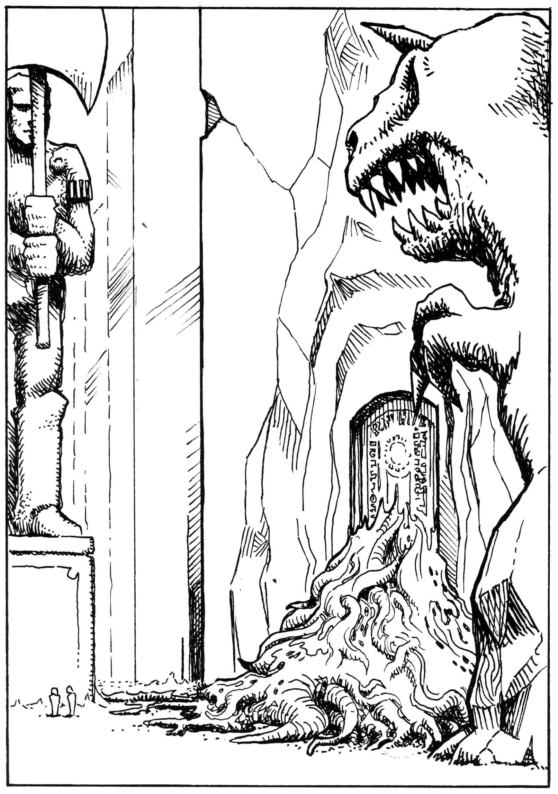
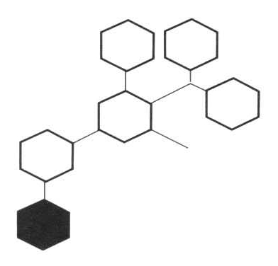
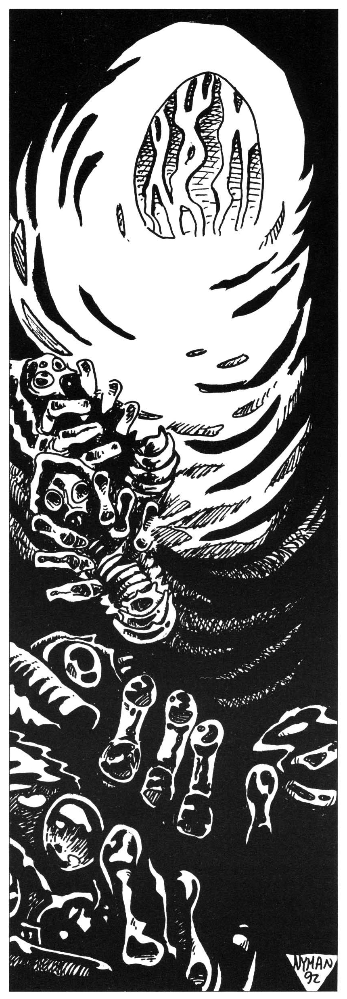
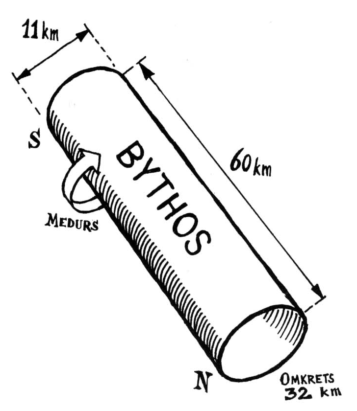
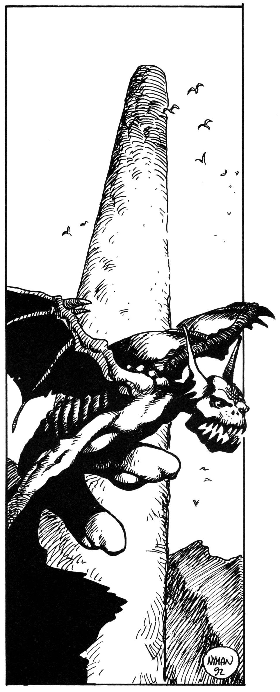
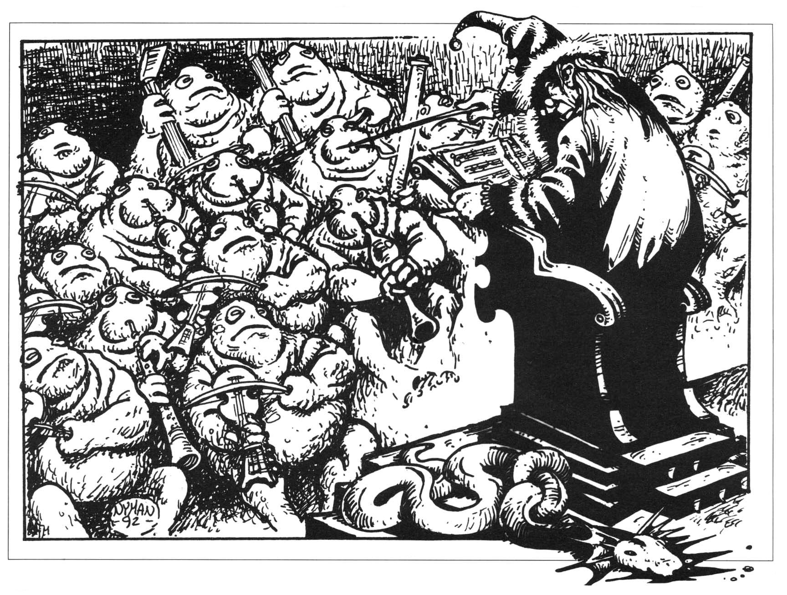

05. Artiklar
Återkopplingar
Det här avsnittet ger en del återkopplingar till tidigare moduler i serien om den femte konfluxen.
Digeta longa
I Oraklets fyra ögon kunde en hemlig person spela Trakoriska rikets agent Praanz da Kaelve. Här kommer fortsatta instruktioner:
Fjärde ransarderkriget innebär stora omställningar för Trakoriska riket. Hemliga polisen, Digeta longa, måste helt naturligt koncentrera sig på kriget. Beroende på hur mycket intressant information Praanz da Kaelve fått fram rörande Shagul, rollpersonerna och den femte konfluxen, får SL avgöra hur stora resurser man kan avvara på en fortsatt utredning. Förslagsvis kan någon av följande situationer uppstå:
- Praanz da Kaelve har inte kommit på något av intresse. Han får sparken eftersom han jagat fantasifigurer och istället förbisett hela krigshotet. Spelaren kan lägga av eller fortsätta att spela da Kaelve som en vanlig SLP på egen hand, på jakt efter upprättelse.
- Praanz da Kaelve har inte kommit på något av intresse. Han förflyttas till armén i Gaaz Ulul för att se över stadens försvar. Spelaren kan lägga av.
- Praanz da Kaelve har inte kommit på något av intresse, men när kejsarens siare upptäcker att konfluxen ska äga rum på den nordliga ön Clusta Noba i samband med stjärnefallet, får han en andra chans. Han beordras leda en mindre flottstyrka mot Clusta Noba. Uppdraget är måttligt ärorikt (vem bryr sig om vad dessa vimsiga himlafluktare säger), men alltid något.
- Utredningen bedöms så intressant att Praanz da Kaelve får fortsätta den med oförändrade resurser.
- Praanz da Kaelve har övertygat Bodaken om att Trakoriens framtid snarare beror på Shagul och den femte konfluxen än på kriget mot Ransard. Han får fria händer och obegränsade resurser.
Tunga indicier är:
- att barbarerna på Lumaria, Manovga och Chrachz anslutit sig till Shagul.
- upptäckten av Shaguls vagga, byggd i Tricilve
- att en allians mellan Ransard, Kargom, f.d. Kishatet och Shagul är på gång
- att stegoserna och ransarderna sänt flottstyrkor mot Marjura och Clusta Noba.
Shagul
Shagulspelaren fortsätter som tidigare att jaga rollpersoner och siare eller pysslar med annat som tycks honom värt att göra. I denna modul tillkommer följande möjligheter:
- Nekromantikerhövdingarna på Manovga, Lumaria och Chrachz norr om Trakorien ber Shagul att bli deras kung. Accepterar Shagul måste han permanent binda en av sina kloner på de nordliga öarna. Öarnas militära styrka är 60/30 (jfr sista kartan i Oraklets fyra ögon). De många magikerna behärskar därtill starkare krigsmagi än någon annan makt på de trakoriska öarna. Magin fördubblar i princip styrkornas värde. Någon månad efter att Shagul accepterat ledarskapet, försöker ransarderna alliera sig med Shagul och kargomiterna mot Trakorien och Stegos. Shagul får avgöra om erbjudandet är intressant.
- Kontrollen över RhabdoRana minskar.
- RhabdoRana på fastlandet vet att organisationen infiltrerats på öarna och försöker slå tillbaka, t.ex. genom Dahobny.
- Någon krets som tidigare stått under trollkarlens kontroll kan ha insett att man blivit lurad och bytt sida.
- Shagul tvingas organisera om sina återstående RhabdoRanamördare till en enda krets. Organisationen görs mer öppen så att medlemmarna träffas. Dessa ”trogna” vet också att RhabdoRana infiltrerats, men tror sig stå på den ”goda” sidan. Det kollektiva medvetandet minskar så att Shagul måste leda organisationen direkt via en av sina kloner. I kretsens högkvarter har Shagul inrättat ett litet underjordiskt tempel för att stärka moralen och hålla samman gruppen. Templets kärna är en cirkelrund kammare. I kammarens mitt sticker ett två meter högt huvud upp ur golvet. Det är hårlöst och runt som på ett spädbarn, men ohyggligt fult med svavelgula ögon och hängande svarta läppar som släpar längs golvet när det vänder sig runt. RhabdoRana tror att varelsen är deras skyddsväsen Ghumgakk, men i själva verket tillhör huvudet en mindre demon vid namn Faglang, av Shagul anlitad som attrapp.
- Utfärd bortom spelvärlden. Shagul vet till en början inte att äventyrarna lämnar spelvärlden, men han kan få reda på det så småningom genom följande källor:
- Ebharing berättar om den inledande striden mot Manghalde och Melealina. Shagul gläds obeskrivligt av nyheten om sin gamle lärjunge och fiendes död, men undrar samtidigt vad som är på gång.
- Shaguls spion vid tullen i Mea Plakole, en lägsta gradens RhabdoRanamördare utan svart underläpp, berättar vad han fått reda på om rollpersonerna. Samma spion kan snoka i palatset, men löper stor risk att bli fast eftersom han ännu är ganska amatörmässig.
- Den fanatiske prästen Varicras som försöker mörda Melealina på Stegos kommer till de tidigare Kishaterna och berättar vad han vet. Om Shagul allierar sig med Kishaterna blir även han informerad.
- RhabdoRana kan spåra rollpersonerna ut på Fokalerslätten och ända bort till, och varför inte in i Woddam.
- Någon mindre demon kan lokalisera sällskapet ute i Multiversum till exempel på vägen bortom Woddamporten. Ebharing kan även träffa dem i äventyrets slutfas.
- Rollpersonerna kan råka åkalla Ebharing i Bythos om de kallar arkonen Cupria för fel namn.
- Shagul kan genom nekromanti frammana Manghaldes döda själ och tvinga den berätta vad han vet. Manghalde vet ganska lagom mycket. För att kunna kalla till sig Manghalde bör Shagul vara tvungen att få tag i en bit av Manghaldes kropp.
- Shagul kan välja att personligen förfölja äventyrarna i Multiversum genom en transferritual. Den klon han skickar ut förlorar dock förbindelsen med de övriga och försvagas därför. Använd värden och förmågor från Columna Ramorba, en shagulit i Svavelvinter. Vidare måste Shagulspelaren välja om han vill veta vad klonerna i spelvärlden gör eller om han hellre vill följa klonen i multiversum. Han kan nämligen inte bevaka båda. Den/de Shagulspelaren väljer bort sköts i hans anda av SL. Shagul kan välja att när som helst stänga av klonen ute i Multiversum om kris uppstår.
- Stjärnefallet — Konfluxen. När stjärnefallet inträffar, det som bland annat utplånar Yoh Niur, ser även Shagul att den femte konfluxen snart kommer att äga rum på Clusta Noba. Samtidigt ser han att den inte kommer att äga rum där utan på en punkt mitt ute i Trakoriska sjön. En delikat paradox att fundera över.
- Störning i spelvärldens maktbalans. Mäktiga varelser i spelvärlden, däribland Shagul, kommer att uppfatta närvaron av Kristalltjuren, regnbågspennan och eventuella andra gudomliga föremål rollpersonerna släpar med sig från Nominatorns palats in i spelvärlden. De kommer att känna var och när dessa föremål trädde in i spelvärlden och tar sig kanske dit för att undersöka. Melealina kommer av den anledningen att segla iväg från Frakudd så snart som möjligt.
Oraklen
Melealina
Melealina är en kraftig motor i den fortsatta intrigen och måste därför överleva. Sedan hon återhämtat sig från upplevelserna i de grå hallarna märker rollpersonerna att hennes personlighet förändrats. Hon verkar mer avlägsen, har förlorat sin glädje och blivit bekymrad och allvarlig. Frågar man henne förnekar hon att något särskilt hänt. Hon magrar av och äter bara vissa starkt doftande örter som hon själv plockat eller odlat. Ibland när hon tror sig vara ensam sitter hon och pratar för sig själv.
SL: Det är bördan av hennes öde som tynger Melealina. Ghumgakk har berättat för henne att hon för den goda sakens skull måste svika den hon älskar och de som litar på henne, utföra en svårt brottslig gärning och slutligen dö martyrdöden. Hon är förbjuden att berätta för någon om dessa otrevligheter, vilket inte gör dem lättare att uthärda.
Det blå barnet
Det blå barnet, piratklonen av Shagul som Manghalde odlat fram från trollkarlens avhuggna hand, hindrar Shagul från ytterligare kloning. Dör det blå barnet kan trollkarlen tillverka kloner efter behag enligt reglerna i Oraklets fyra ögon. I nästa del av serien får man ytterligare användning för barnet.
Nastigast
Matematikern Nastigasts uppgift är att ge Melealina ett försprång gentemot Trakoriens övriga astrologer. Han ensam kan räkna ut hur stjärnhimlen kommer att se ut timmarna före den femte konfluxen. Melealina kan i sin tur tolka positionerna och vet därför ensam vad som kommer att hända.
Nastigast gör sina beräkningar på Stegos medan rollpersonerna är i Bythos. När Melealina teleporterar sig från ön med de andra oraklen för att möta äventyrarna, vägrar Nastigast följa med. Han har det bra på Stegos. Den bortskämde matematikern pratar emellertid lätt bredvid munnen och vet för mycket för att lämnas kvar. När flykten blir brådskande tvingas Melealina därför lämna ut honom till Ghumgakks mördare. Detta är det brott demonen förutspådde henne.
Om Nastigast dog redan i Oraklets fyra ögon, kommer även Melealinas kunskap om framtiden att innehålla felaktigheter, vilket får konsekvenser i äventyrets sista del.
Raoga
Den ylande vargkvinnan Raoga är vansinnig sedan hon suttit inspärrad tillsammans med en Remuntradyrkare på Gatves klippa.
Raogas sång på ”den gyllene klaven”, en mycket säregen tonart, får kristallpuppan att börja skjuta groddar, utskott av svart metall som så småningom kommer att bilda slottet Store Stenfar. Eftersom Melealina vill plantera slottet på Clusta Noba, skiljer hon snabbt de båda åt när hon märker att slottet börjar växa. Mer om detta i nästa äventyr.
Raogas sång fungerar fortfarande som en E7 ÖPPNA.
Om Multiversum
Det är nödvändigt med lite metafysisk allmänbildning innan man ger sig ut i Multiversum. Äventyrarna är naturligtvis gröngölingar på området, men vana interuniversella resenärer som Koklai, Iblis och i viss mån Melealina och Shagul känner till det som står i denna artikel. De två förstnämnda kan informera rollpersonerna i lagom portioner. Båda har emellertid uppfattningen att kunskap bör portioneras ut med viss försiktighet. SL bör läsa den här artikeln även om den förefaller honom en smula mystisk.
Den första regeln i Multiversum är enligt Koklai att ta allt med en nypa salt. Man bör hålla i minnet att allt som går att säga och förstå definitionsmässigt är en förenkling. Man träffar ständigt på motsatser och undantag till regler. Kanske beror de på gudarnas misstag eller nycker, kanske är själva motsägelserna en illusion. Koklai hoppas en gång kunna visa att illusionerna i själva verket är den enda verkligheten.
Följaktligen är den här artikeln bara ett sätt att se på Multiversum som inte alls behöver vara det enda rätta.
Om världarnas likhet
De som reser i andra universa träffar ofta varelser de vagt känner igen trots att de aldrig tidigare varit på platsen. Det verkar osannolikt att samma typ av varelser skulle uppstå i flera universa av en slump. Förklaringen är att gudarna inte har obegränsad fantasi. De sneglar ofta på varandras verk och stjäl idéer som verkar bra. Under tidernas gång har dessutom vissa arketyper uppstått, lösningar som visat sig fungera, men som ingen längre kommer ihåg vem som hittade på. Den humanoida formen med två armar och två ben är en sådan arketyp, liksom spindeln och grodan. I det här äventyret dyker tuppen upp som arketyp. Om folket i spelvärlden visste vilken hög status tuppar har ute i Multiversum skulle de antagligen aldrig mer äta tuppgryta.
Om världstillhörighet och hemlöshet
Den som föds i spelvärlden eller i någon annan skapad värld hör automatiskt till den världen. Den som hör till en viss värld kan besöka andra världar, men han behåller sin form och hör fortfarande till sin hemvärld. Mäktiga varelser kan däremot befria sig från sin världstillhörighet, bli hemmastadda i flera världar samtidigt och manifestera sig i andra former än sin ursprungliga. Detta ger vissa fördelar och vissa nackdelar.
Fördelarna är nya upplevelser och kunskaper, makt och vidare vyer. Eftersom tidens gång ofta är bunden till en viss värld kan man även vinna ett mycket långt liv.
Nackdelarna är att man blir hemlös, en främling överallt, även i sin gamla hemvärld. Den hemlösa människan upplevs inte längre som en människa, utan som något som försöker likna en människa. Hon ser ut som en människa och uppför sig så, men andra människor känner att något är fel. Ofta blir de rädda. De kan respektera främlingen men inte älska honom eller skämta med honom längre.
I speltermer delas den hemlöses Karisma upp i två nya egenskaper: Charm respektive Myndighet. Charm är egenskapen att inge förtroende, att få folk att slappna av och tycka man är en trevlig prick. Myndighet är förmågan att inge respekt och fruktan, att driva igenom sin vilja, att få folk att tystna när man talar.
De nya egenskaperna beräknas så här:
Charm = Tidigare Karisma -(1T6+2) Myndighet = Tidigare Karisma +(1T6+2)
SL kan även låta hemlösheten ge andra biverkningar, t.ex. psykiska störningar, PSI-krafter, oförmåga att bedöma tid eller förändrad PSY.
Det är farligt att bli hemlös i Multiversum om man inte förberett sig. Den hemlöse drar ofta till sig uppmärksamhet från mäktiga varelser som tidigare struntat i honom. Dessa varelser ogillar för det mesta den nye uppstickaren som tvingas fly eller försvara sig. Spelvärldsliga trollkarlar allierar sig därför ofta med demoner eller andra makter innan de tar steget ut i Multiversum.
Om Multiversums allmänna språk
Den som rest mycket i spelvärlden vet att de många språken ställer till stort besvär. Än värre blir det för resande ute i Multiversum. Vissa främmande arter talar till och med via organ som människor saknar.
Gudarna har löst de praktiska problemen på två olika sätt, det höga respektive det låga språket.
Det höga språket
För sig och sina betrodda tjänare har gudarna reserverat Det höga språket. Detta språk ligger gömt längst inne i Multiversums minsta skrymsle. Det finns inbyggt i själva köttet och benen på alla intelligenta varelser. Vissa lärda menar att Multiversum i själva verket är byggt av det höga språket. Gudarna använder det för att sända drömmar och impulser till sina undersåtar. De dödliga själva förstår det visserligen, men känner inte till det och kan normalt heller inte använda det. Det höga språket kan liknas vid koncentrerad magi. Ingen dödlig kan höra ord talas rakt ut på det höga språket utan att förändras. Det ger undermedvetna inblickar som människor inte är menade att ha.
Arn Dunkelbrink blev exempelvis utvald till sitt märkliga öde då han hörde draken Blatifagus tala på det höga språket.
Varje gång rollpersonerna hör en mening på det höga språket måste de klara ett PSY-slag, annars blir de hemlösa i Multiversum enligt ovan. Den hemlöse drabbas av personlighetsstörningar, t.ex. djupa depressioner, manier, fobier från magireglernas fobitabell eller till och med psykoser under 1T12 månader. Misslyckas han med ytterligare ett PSY-slag blir störningen permanent. Hans Karisma delas dessutom upp i Charm och Myndighet som beskrivits ovan. SL kan hitta på andra bieffekter som stämmer med respektive äventyrares personlighet och yrke.
Det låga språket
Till skillnad från det höga språket är det låga språket gjort för att användas. Det låga språket är ett slags Multiversums Esperanto eller Interlingua. Det låga språket är den minsta gemensamma nämnaren för alla språk. Alla som har ett språk känner till det utan att veta om det.
Man kan samtala mycket enkelt på det låga språket, men bara om man inte har något annat språk gemensamt, om båda parter anstränger sig att kommunicera och om båda dessutom lyckas med ett INT-slag. Så snart man förstår det allra minsta av vad den andre säger på något vanligt språk blockeras omedvetet det låga språket. Endast munkar med Gott språksinne kan använda det låga språket parallellt med andra språk och kan på så sätt göra sig förstådda överallt. När det låga språket ska användas i spelet, kan SL låta spelarna samtala på något lagom obegripligt B- eller hellre C-språk från skolan, kanske tyska, franska eller spanska.
Multimandalan och skaparpennorna
Enligt vissa äldre myter fanns i urtiden den stora Multimandalan, en jättelik karta över det Multiversum som ännu ej skapats. Multimandalan hade ritats av skapargudarna gemensamt, men innan de hann ge ritningen verklighet utbröt ett krig med kaos makter. Under striderna smög sig några kaosgudar in i den skimrande kammare där mandalan förvarades, slet stycken ur väven och använde bitarna till att bygga upp sina egna förvridna världar. När det fruktansvärda brottet uppdagades grälade skapargudarna över vem som brustit i vakthållningen. Misstro lägrade sig bland dem och växte tills de inte längre litade på varandra. Då skar varje gud ut den bit han ritat av Multimandalan och förverkligade sina egna världar långt ifrån de andras. Det sägs att förstörelsen av Multimandalan just är orsaken till det splittrade Multiversum med dess osämja och främlingskap.
Den mandala magiker ritar upp för att förflytta sig i Multiversum är en förenklad version av den ursprungliga multimandalan.
Bythos blev verkligt när Nominatorn ritade det med regnbågspennan på en liten bit av Multimandalan. På samma sätt tillverkar skickligare skapargudar ritningar över betydligt mer komplicerade världar. Liknande ritningar existerar åtminstone över vissa delar av spelvärlden. Allt som händer med ritningen överförs till världen. Den som får tag i en sådan ritning kan därför med en vanlig färgskrapa utplåna hela kontinenter. Dessa mäktiga dokument ligger naturligtvis inte och skräpar hur som helst utan finns på säker plats, ständigt övervakade av starka väktare. Världspergamenten är knutna till den värld de föreställer, medan samma skaparpennor kan användas på flera ritningar. Rollpersonerna har i uppdrag att ta med sig Nominatorns skaparpenna, den s.k. regnbågspennan, tillbaka till spelvärlden. Det är nämligen dags för lite retuschering av kartorna...
Om namn och verklighet
Varelser, föremål och platser kan existera på olika sätt och vara olika verkliga. Ta till exempel en vanlig stol i spelvärlden. Den har en viss vikt och ett visst utseende med sina fördelar och skavanker. Men stolen i spelvärlden kanske bara är en avbild av en mycket mer perfekt och verklig stol på något helt annat ställe. Och kanske den mycket verkligare stolen i sin tur bara är en kopia av den perfekta stolen, alla stolars stol, själva mallen som gudarna format med sina egna händer. En billig kopia av en kopia som den i spelvärlden blir alltid sämre än originalet. Den är dessutom mycket mindre verklig och lättare att slå sönder. Kanske är spelvärlden och ett otal liknande världar helt och hållet ihopplockade av lättviktiga föremål, billiga xeroxkopior som bara skiljer sig åt genom sina brister i förhållande till originalet. Hos Nominatorn visar sig den högre verkligheten i att alla föremål är tusen gånger så tunga som i spelvärlden.
De perfekta föremålen behöver inga namn eftersom de är ensamma i sitt slag. Namn behövs på saker och varelser som måste skiljas åt på något praktiskt sätt. Ett namn är både en fördel och en svaghet. Namnet ger det enstaka föremålet en identitet och är ofta en förutsättning för dess existens; utplånas namnet upphör föremålet att existera (som arkonerna i Bythos). Makt över namnet eller delen ger ofta makt över föremålet. Denna likhetsprincip är en grundläggande sanning inom magin. Ute i Multiversum bör man därför vakta sitt namn (och till exempel inte skriva in det i Nominatorns gästbok).
Om gudar och andra mäktiga varelser
I ’Den lille metafysikern’ (Sinkadus 17/1989), har jag redovisat ett sätt att se på gudar. Många ogillade artikeln, antagligen för att de inte följde Koklais råd och tog den med en nypa salt. För mig kan gudar vara lite av varje. Det är mest en smaksak vad man kallar demon, gud, halvgud etc. Med stor sannolikhet finns det ett antal mäktiga varelser som av någon anledning vill bevara spelvärldens universum, och andra som vill förändra eller krossa det. Vilka dessa varelser är, vad de har för relationer sinsemellan eller vad de vill, är mest en fråga om tro och spekulation. Deras motiv kan antagligen inte formuleras i våra ord eller ens rymmas i mänskliga hjärnor.
Med demon menar jag i princip varje fientligt inställd varelse som inte hör hemma i spelvärlden. Riktigt kvalificerade demoner bör ha god aptit på levande varelser, vara utrustade med äckliga bihang samt sakna samvete, kärlek och alla andra sociala egenskaper. De må sedan vara magiskt frammanade, komma från kaos eller från en parallellvärld.
Mäktiga varelser som gjort sig mycket verkliga och självständiga är inte beroende av någon yttre form för att existera. Sådana varelser har ofta en viss form i ett universum och en annan form i ett annat. Ghumgakk, Ebharing och Store Stenfar är sådana varelser. Till exempel är Ebharing just nu ett svärd i spelvärlden och en levande staty i de grå hallarna. Slår man ihjäl en sådan varelses form kanske den stängs ute från just den världen, för ett tag eller för alltid, men den är inte utplånad. Man säger att varelsen manifesterar sig på ett visst sätt i en viss värld.
Ghumgakk
Vad hände egentligen Melealina och Manghalde bortom världen?
Enligt Stegosi urgamla legender skulle den främling bli kung som först landsteg på ön sedan mörkret lyft. Kungen skulle dock uppfylla vissa villkor och bland annat medföra en hjälte vid namn Store Stenfar. Arn Dunkelbrink stod villrådig ända tills alvkvinnan Melealina dök upp på Stegos och sa att hon visste var Store Stenfar finns. Hon berättade att hjälten hålls fången i en annan värld, men erbjöd sig att hämta honom.
Tillsammans med trollkarlen Manghalde genomförde hon en transferritual som slutade i katastrof. Melealina visste inte att Shagul bevakar de kraftpunkter alla magiska världsfarare måste passera för att lämna spelvärldens universum. Nekromantikern kände igen sin gamle fiende Manghalde och satte demonen Ebharing på resenärernas spår. Ebharing, som otåligt vandrat i gränstrakterna mellan världarna i väntan på att bli insläppt i spelvärlden, hade inget emot lite människojakt. Demonen hann ifatt vandrarna i de grå hallarna och slet den arme Manghalde i stycken. Melealina räddades dock från samma grymma öde genom att en annan demon oväntat dök upp och svalde henne. Demonen var den vedervärdige Ghumgakk, hämnaren med de svarta läpparna, mördarligan RhabdoRanas skyddsväsen.
Ghumgakks budskap till Melealina
Demonen Ghumgakk, som i sin tur sägs tjäna gudinnan Inashtar, berättade för alvkvinnan i sin mage att han blivit utsedd att bistå henne och att berätta om de offer som ska krävas av henne. Ghumgakk är alls ingen god varelse, men han irriteras över att Shagul använder hans trogna mördarsekt RhabdoRana för egna ändamål. Han har tillfälligt ställt sig på den goda sidan bara för att se nekromantikern besegrad. Ghumgakk berättar att Shagul inte får dominera den femte konfluxen, den ödespunkt i tid och rum som närmar sig. Trollkarlen skulle släppa in Ebharing i vår värld för att därigenom orsaka miljoner människors plåga och död och göra sig själv till herre.
Store Stenfar måste lösas ur sin fångenskap om den femte konfluxen ska kunna räddas. Store Stenfar är fånge hos Nominatorn av Bythos, men de magiska vägarna till världen Bythos är bevakade av Shagul och kan inte användas. Återstår ett par urgamla naturliga passager mellan världarna vilka Shagul inte känner till. Av dessa passager är endast en tillräckligt nära: porten i Woddam.
Det hedniska landet Woddam krossades av gudarna i tidernas begynnelse. Ett jättelikt eldklot slungades ner, förintade riket och bildade Fokalerslätten på centrala Palamux. Ghumgakk vet att rester av Woddamkulturen fortfarande gömmer sig i underjordiska fickor under bergen väster om slätten. Det finns en försluten passage in till grottorna från ruinstaden Yoh Niur. En karta till nyckeln som öppnar grottpassagen har ärvts ner genom tidsåldrarna hos Poa Hualba — ”förste nyckelväktaren”, ett ämbete som gått i arv från far till son sedan tidernas begynnelse bland huelerna, ett nomadfolk på Fokalerslätten.
Melealina får inte själv beträda Woddam. I spelvärlden kan hon bara skadas av världsfrämmande varelser och föremål, men i Bythos eller Woddam kunde hon lätt dö. Arn Dunkelbrink är likaså för värdefull för att riskeras. Återstår att skicka några pålitliga och kompetenta, men samtidigt umbärliga personer...
Ghumgakks hemliga tillägg
Ghumgakk gav dessutom Melealina några instruktioner som hon inte får yppa för någon innan tiden är mogen. När alvkvinnan får tag på Store Stenfar, ska hon inte på några villkor överlämna honom till Arn Dunkelbrink på Stegos. Store Stenfar behövs för andra uppgifter, men dessa får inte avslöjas ens för rollpersonerna eller för Arn. (Mer om detta i äventyrets avslutning.) Hon måste alltså bedra den man som älskar henne och de vänner som litar på henne. (Ghumgakks svarta läppar drogs till ett hånfullt leende när han såg hur dessa sista instruktioner plågade Melealina. Halvflytande varelser i hans mage anade mästarens sinnesstämning, visade omedelbart tänderna och bad inställsamt att få smälta alvkvinnans mjuka kött. Detta nekades dem medlidsamt men bestämt.)
Händelser i Trakorien
SL bör naturligtvis som tidigare låta de politiska händelserna rulla på medan rollpersonerna äventyrar. Tidsskalan är mindre exakt än i Oraklets fyra ögon, vilket är både en fördel och en nackdel. Några större krig bjuds inte, utan perioden kännetecknas av lurpassande och snokande i fiendens svagheter inför den väntade slutliga uppgörelsen.
Eftersom sällskapet ganska snart ger sig ut i öknen och sedan lämnar spelvärlden helt och hållet vet de inte vad som händer i Trakorien. De lämnar en politisk situation och återvänder till en annan. Om SL inte håller sig med andra spelare, kan han läsa igenom det här avsnittet och passa in det som hänt vid sällskapets återkomst.
Det kan däremot vara motiverat att spela utvecklingen i Trakorien om SL använder en Shagulspelare och/eller en Praanz da Kaelve-spelare enligt reglerna i Oraklets fyra ögon. Ingen av dessa spelare känner till att rollpersonerna lämnat spelvärlden, åtminstone inte till att börja med, utan fortsätter antagligen att leta efter dem. SL kan själv bestämma när olika händelser infaller och brodera ut för att hålla spelarna sysselsatta. Det är helt i sin ordning att lägga in äventyrarnas återkomst till spelvärlden när det passar med övrigt spel, eftersom tiden kan ha gått olika fort i de olika världarna.
Händelser
Norra öarna ansluter till Shagul
På de ytterligt barbariska öarna Lumaria, Manovga och Chrachz, norr om Palamux, prisar hövdingarna Shagul som sin tids store nekromantiske ledare. De skickar en delegation till trollkarlen och ber att han leder dem mot ”de mjuka och köttiga folken i söder”. Shagul blir omåttligt smickrad och ser dessutom stora fördelar i förslaget. Han får tillgång till ett territorium och en egen armé i civilisationens närhet. Kung Ottars starka odöda trupper på Marjura är ju bundna till den avlägsna ön eftersom de inte kan korsa vatten.
Shagul försöker hålla alliansen hemlig för att få lugn och ro. Trakoriska säkerhetstjänsten har emellertid spioner bland barbarerna. Kanske lyckas de rapportera till Praanz da Kaelve.
Som en följd av barbarernas enande kommer Ransard och de gamla Kishaterna under Manzonla att försöka bilda en allians med barbaröarna och Kargom.
Stjärnefallet
Såväl Trakoriska riket som runglerna på Trinsmyra och ransarderna på Saphyna har säkert lyckats rädda några egna mer eller mindre begåvade astrologer från Shaguls mordiska hejdukar i Oraklets fyra ögon. Pressen är hård på de återstående siarna att tala om vad som egentligen är på gång, hur krigslyckan ska vända sig etc, men de lärda männen och kvinnorna har märkligt lite att säga. Himlen har inte varit så förvirrad på flera hundra år. Fixstjärnorna tumlar runt som yra höns och man grälar om tolkningen. De flesta är ense om att den femte konfluxen närmar sig, denna omtalade ödespunkt i tid och rum, men det tycks vara stört omöjligt att fastställa dess läge.
Så inträffar oväntat ett större stjärnefall. spelvärlden passerar genom det meteorbälte som så länge trasslat till stjärnbilderna. Några meteorer träffar spelvärlden, till exempel det stora eldklot som förseglar Woddamporten efter att kolossen i Yoh har fallit. SL kan utnyttja tillfallet till att utplåna någon misshaglig stad i Trakorien eller på annan plats. En himlasten slår för övrigt ner i havet nära en större ransardisk flotta så att skeppen går till botten med hundratals man. Så snart meteorbältet forcerats blir mönstren i skyn mycket klarare. Astrologerna häpnar över tecknen och skyndar till sina furstar.
—Segla mot Marjura, kacklar de gällt. Segla mot Marjura! På den lilla ön Clusta Noba kommer den femte konfluxen att äga rum, och den som kontrollerar konfluxen kontrollerar framtiden.
Furstarna hoppar ur sina stolar och ryter order, glada att äntligen få besked, men astrologerna går mumlande tillbaka till sina torn. De kontrollerar och mäter stjärnvinklar och räknar gång på gång, övertygade om att de har rätt. Men samtidigt, en gnagande misstanke om att något inte stämmer...
Kaos tilltar på Stegos
Som antyds i äventyrets inledning, har demonen Ghumgakk berättat saker för Melealina som varken rollpersonerna eller Arn Dunkelbrink känner till. När äventyrarna givit sig av tvingas hon fortsätta det plågsamma dubbelspelet.
Med hjälp av matematikern Nastigasts beräkningar av stjärnornas framtida banor, ligger Melealina flera steg före alla andra astrologer i Trakorien. Hon vet att en stjärna snart kommer att falla. Hon vet att det då blir känt att femte konfluxen ska äga rum på Clusta Noba utanför Marjura. Men det är inte hela sanningen: hon vet också att den dagen kommer Clusta Noba inte att ligga där Clusta Noba ligger idag. (Se där något att fundera över för en nyfiken SL!)
När Melealina är tillräckligt säker på vad som verkligen kommer att hända måste Nastigast röjas ur vägen. Matematikern vet för mycket och har inte förstånd att dölja en hemlighet. Detta har Ghumgakk förklarat i detalj, och demonen har även åtagit sig att utföra det skändliga dådet. Han har givit en RhabdoRanamördare på fastlandet i uppdrag att mörda matematikern. Det är ett självmordsuppdrag där mördaren isolerar sig från mördarligans kollektiva medvetande och därför inte påverkas av Shagul.
När Nastigast är död, ger sig Melealina av från ön med de återstående oraklen, Raoga och/eller Det blå barnet.
Stegos
Historia
Ön Stegos, belägen ett par timmars god seglats öster om Palamux, drabbades år 440 eO av guden Shamashs förbannelse. Orsaken till förbannelsen var att stegoserna svek sin ed att försvara Det heliga Kishatet och istället försökte plundra Kishatets huvudstad Albarunzia före fienden. Ett mörker föll över ön och ingen såg till Stegoserna på över tvåhundra år eftersom det var omöjligt att ta sig till eller från ön.
Veckorna efter förmörkelsen härjade paniken på Stegos. På ett tidigt stadium offrades kungen och alla hans vasaller till gudarna utan resultat. Många människor kastade sig i havet för att simma till Palamux och sjönk bara några meter från stranden. Andra gjorde helt enkelt slut på sin ångest med svärd, gift eller rep. I den kaotiska undergångsstämningen frodades märkliga livsfrånvända sekter, t.ex. bombagerna, som trodde sig kunna sluka mörkret genom att svälja så mycket luft som möjligt, eller hystererna som byggde en gigantisk kastmaskin och slungade sig själva ut i mörkret där de försvann med avlägsna plask.
Någon ordning att tala om blev det först när jungfrun Mithelda från Zinsa trädde fram och påstod sig ha direktkontakt med Shamash i sina drömmar. Mithelda, sedemera känd som Matriarken från Zinsa, dikterade för tempelskrivarna vad Shamash krävde som botgöring och det var en ansenlig lista. Enligt Mithelda skulle mörkret stanna över Stegos tills arenan i Mea Plakole fyllts med skallar av öns döda innevånare. Stegoserna, som alltid varit handlingskraftiga, började genast hugga huvuden av varandra för minsta anledning. Men snart stod det klart att arenan inte skulle få mer än bottenskyla om man så gjorde slut på öns hela befolkning. Återstod att leva vidare i mörkret så gott det gick, föröka sig och lägga de dödas skallar i arenan så snart de givit upp sin sista suck. På så sätt skulle åtminstone ättlingarna i en avlägsen framtid få återse dagens ljus.
Stegoserna knorrade. De var ett storskallat folk och arenan var inte den största på öarna. Ändå räknade man ut att stengrytan skulle vara fylld först om flera tusen år. Mithelda förklarade då att eftersom djuren var innevånare på Stegos fick man använda deras huvuden också. Detta gjorde genast kalkylerna ljusare. Efter någon dags gudomligt grubbel accepterade guden Shamash denna tolkning genom att med en ljungeld bränna in bokstäverna OK på tempelmuren, men tillade i en fotnot att han nästa gång skulle välja en manlig och mindre listig profet.
Hoppet, livet och kärleken återvände alltså till Stegos. Mörkret över ön var lyckligtvis inte totalt utan gav viss ledsyn. På dagarna kunde man ana solen som en ljusare cirkel på himlavalvet och natthimlen var i stort sett likadan som tidigare. Folk och djur anpassade sig snart till ett liv i dunkel. Märkligt nog överlevde även de flesta växter utan att ens förlora i frukt eller ax. Man antog att Shamash inte hade för avsikt att svälta stegoserna och därför gjorde de nödvändiga justeringarna. Faktiskt åt man godare på Stegos under mörkret än före och fick därigenom mer tid över till annat än jordbruk.
När nu stegoserna inte längre kunde handla med eller resa till omvärlden, ägnade man sig istället åt fromma studier av Nomona Veritrae — sanningens namnrullar, åt konst, vetenskap och alstrande av barn. Eftersom man levde i väntan på ljusare tider spekulerade man gärna i hur morgondagen skulle te sig. Astrologin utvecklades högt tack vare att man kunde betrakta stjärnhimlens rörelser dygnet runt. En rad profetior utfärdades. Bland annat slog man fast att den första främling som satte sin fot på Stegos sedan mörkret lyft skulle bli kung på ön. Vidare såg stjärnskådarna hur Det heliga Kishatet i framtiden skulle avfalla från den sanna tron och hur Stegos skulle segla ut ur mörkret som Shamashi hämnare. Denna inspirerande upptäckt gav krigskonsten högt anseende och så gott som varje innevånare lärde sig använda vapen. Dagens stegoser är därför mycket skickliga krigare med specialitén att slå huvudet av sina motståndare.
I en speciell profetia sägs att den främmande kungen ska komma med en oövervinnelig hjälte vid namn Store Stenfar, vars kraft ”krossar arméer och flyttar själva marken”.
Förljusningen
Natten till den 30/8 år 612 eO sover ingen på Stegos. Dagen innan har den sista skallen lagts ner i Mea Plakoles arena. Ljusets tid är inne. Matriarken (sedan Mitheldas dagar ett fast ämbete) har påbjudit att alla ska samlas med vapen, rustningar och tre dagars matransoner vid skeppsvarvet nära öns sydspets. Vagnar rullar mot söder under stjärnorna och folkhopen tätnar ju närmare den utvalda platsen man kommer.
De tidiga står och väntar redan vid midnatt. Två timmar före gryningen hörs plötsligt tunga vingslag från norr och en jättelik flygande varelse landar på ängarna ovanför stranden där folket är samlat. De djärvaste kliver fram. En drake har landat, en äkta drake, något ingen stegosier sett, och en främling kliver ner från dess rygg. Han är mörk i synen, en farlänning! Riddar Naramsi av den östra klyftan minns profetian om den främmande kungen, överväldigas och faller på knä inför främlingen. Draken skjuter några hotande gnistor när folket närmar sig, men ryttaren lugnar den och frågar efter färskvatten. Ivrigt lösgör riddaren sin vattenflaska och räcker den tillsammans med sitt svärd till främlingen. Arn Dunkelbrink, för det är naturligtvis han och draken Blatifagus som anlänt, tar emot vattnet, dricker sig otörstig, betraktar därefter med allvarlig min de tiotusentals människorna i vattenbrynet och yttrar de klassiska orden: ”Kan någon förklara vad det är frågan om?”
Något senare står Stegosi folk till sista man församlat vid havet för att betrakta den första gryningen på nästan tvåhundra år. I strandlinjen vilar den stora flotta man byggt under mörkertiden. Solens första strålar skär horisonten. Det blir tyst men samtidigt ljust. Solen stiger röd ur havet. Folket faller ner på knä och deras tårar väter sanden. Snart ljuder en jubelsång, trossar kapas och de tvåhundra stora skeppen glider på sina spår ner i vattnet som klyvs i kaskader.
Kishatets fall
Såsom det berättas i Oraklets fyra ögon, hade Det heliga Kishatet vid denna tid avfallit från Shamashi smala stig och ingått en ohelig allians med diverse osnutna barbarer. Kishatets ledare, den kätterske Shar Kishatin Manzonla, hade manat till krig mot Trakoriska riket, men samma dag som han i triumf skulle leda sin invasionsflotta mot Paratorna lättade mörkret över Stegos. Ur historiens dunkel kom stegoserna seglande för att näpsa avfällingen och hans anhang. Kishatet kollapsade moraliskt och föll samman som ett korthus utan att vapen korsades. Under sin nye konung Arn Dunkelbrink da Kharasme tog stegoserna snart över Kishatets domäner. Manzonla och hans närmaste män flydde till sina allierade, ransarderna på Saphyna.
Religion
Stegoserna dyrkar sanningsguden Shamash som de kallar Vite Shamash. Religionen skiljer sig inte mycket från den traditionella Shamasherdyrkan som beskrivs i Trakorien, men stegoserna bryr sig mer om den inre uppriktigheten än om förbud och de yttre formerna. Vite Shamash har också fatt inslag av fruktbarhetsgud och kyrkan leds av en kvinna, Matriarken, som utses på livstid bland tempeljungfrurna. En del präster på Palamux, vilka i och för sig bekänner sig till förljuselsen, har svårt att acceptera en kvinna som ledare.
Dagens politiska läge på Stegos och på Palamux
Arn Dunkelbrink blev alltså kung på Stegos därför att han råkade vara den första främling som landsteg på ön sedan förbannelsen brutits. Just när det hände funderade ingen på saken eftersom stunden var stor, och kröningen bestämd sedan länge enligt urgamla profetior. Men sedan stegoserna tog över Det heliga Kishatet och vardagen kommit ifatt, har vissa grupper börjat ifrågasätta kungens rätt till makten. Mest är det frågan om en kulturkrock. Den ansiktslöse ädlingen från Lasemos är visserligen en riddersman av god stam och dessutom en beryktad krigare, men han är samtidigt egensinnig och inte särskilt gudaktig.
De fromma joobalasherna i Frand utstod svår förföljelse under Kishatets styre och har därför blivit den dominerande religiösa sekten på Palamux. Sektens medlemmar är mycket noga med sin tro och köper inget som inte granskats och vägts sju och sjuttiosju gånger. Vissa joobalasherpräster har påpekat att kungen enligt profetian skulle komma först när mörkret hade lyft från Stegos och att Arn dök upp redan på natten innan, alltså för tidigt. Adelsmän på Palamux som inte vill lämna makten till stegoserna har anslutit sig till tvivlarna. De kungatrogna hävdar att kungen kom något för tidigt eftersom hans drake fick extra fart av s.k. getvindar på hög höjd, dvs. fartvindar efter stormguden Marduks bockdragna himmelskärra. Skeptikerna svarar att detta inte hör till saken. Profetian uppfylldes inte och orsaken är i sig ointressant! Var är förresten hjälten Store Stenfar som kungen skulle ha med sig, han som krossar arméer och flyttar berg? Kungens män mumlar då att hjälten inte kommit ännu, men vänta bara...
Sedan alvkvinnan Melealina kom till Stegos tillsammans med sina mystiska vänner, däribland den ruttnande trollkarlen Manghalde, har tvivlarna blivit ännu starkare. Ska man nu styras av en halvmänniska och häxa som helt tydligt snärjt kungen med kärleksdrycker och falska formler?
De kungatrogna fick nytt hopp när Melealina sa att hon tänkte hämta Store Stenfar till Stegos från en annan värld, men den misslyckade expeditionen i bortomvärlden fick allt att rasa. Nu är framtiden mycket oviss och inbördeskrig hotar. Ett sådant krig skulle försvaga både Palamux och Stegos så att ransarderna eller trakorierna lätt kunde besegra dem.
Den andra främling som kom till Stegos, och därmed Arn Dunkelbrinks rival, var en tjärhandlare från Trybra kallad Dubbel-Masse. Han seglade vilse kvällen före förljusningen när han var på väg att uppvakta den vackra änkan Zilla i byn Corsifos. Under sin natt på sjön höll han värmen genom att tömma cidertunnan han tänkt ge änkan i s.k. kille-kill-present och rände i gryningen upp på Stegosi norra rev, full som en räv. Joobalasherna påstår att Dubbel-Masse mycket väl kan vara den rätte kungen, särskilt som han kastade i båtens ankare med ett glatt. ”Store sten far i! Passe sig, här som himlatopp!”. Frasen har noga analyserats av hundratals lärda herrar, och påstås visa släktskap med hemliga texter ur Nomona Veritrae. De flesta som träffat tjärhandlaren håller med om att han tycks vara synnerligen olämplig som kung, men profetior är ändå profetior. Outgrundliga äro gudarnas vägar. Dessutom är Dubbel-Masse från Moskorien och därmed mer acceptabel för den gamla adeln.
Samtidigt rör det sig rejält i omvärlden. Trakorierna slickar sina sår på Paratorna och gör sig redo att ta tillbaka det som var deras. På Saphyna befäster de krigiska Ransarderna sina ställningar och funderar som bäst på var de ska slå till härnäst. Den tidigare krystalokraten Manzonla har sökt skydd hos barbarerna och funderar på hur han ska utnyttja grälet på Stegos. Långt uppe i norr smider den slemme Shagul vidare på sina planer att dominera den femte konfluxen. Stegos och Palamux måste enas under en fana om landet inte ska bli en parentes i historiens bokrulle.
Flora och fauna
När Stegos förmörkades anpassade sig växter och djur mycket snabbt till ett liv i skuggan. Omställningen gick så onaturligt lätt att guden Shamash rimligtvis måste ha haft ett finger med i spelet. Ön har sedan länge varit uppodlad och ganska tätt befolkad, så några farliga odjur står inte att finna. Allt människoätande, med undantag för vanliga vildsvin, var utrotat redan innan förbannelsen.
Djurens särdrag
De djur man ser på Stegos liknar sina motsvarigheter på fastlandet, men har något längre päls och saknar helt färger utanför gråskalan. Ögon, öron och nosar är ofta förstorade, men varken däggdjur eller fåglar har utvecklat nya sinnen. Fiskarna är sig helt lika vilket inte är så konstigt. Man märkte redan tidigt att fiskar kunde simma till och från ön trots att båtar sjönk i vattnet.
Justering av djurens egenskaper:
- Alla djur ser i mörker
- FV Upptäcka fara +4
Växternas särdrag
Växterna på Stegos har förlorat sin gröna färg och är grå liksom djuren. De flesta växter kan dock skifta från vitt till svart på några minuter. Nyansen avgörs av hur ljust det är. På natten blir växterna svarta för att suga upp så mycket ljus som möjligt, i halvdager är de grå och i solsken helt vita för att skydda sig mot solstrålarna. Därför är natten på Stegos becksvart, medan ängarna under en solig dag liknar ett snölandskap. Blad och stammar är tjockare och mer porösa än på andra platser.
Stegosi befolkning
Stegoserna är ett enhetligt folk, sammanfogat av sin långa isolering. Mer än andra människor på kontinenten känner stegoserna ansvar för sitt land och för sina grannar, vilket SL bör komma ihåg när han spelar dem. Skillnaden mellan rika och fattiga är ovanligt liten på ön. Hela det gamla kungahuset och en stor del av adeln avrättades strax efter förbannelsen och har ingen politisk betydelse. Tron på vite Shamash är stark. Har man levt i tvåhundra år under en förbannelse, ska det mycket till innan man kompromissar med gudarnas påbud igen.
Utseende:
Stegoserna är genomgående bleka i hud, ögon och hår. Bortom Stegos bär de alltid väl tilltagna mantlar och stora slokhattar mot solljuset som de inte tål. Ögonen är större än hos andra folk, vilket ger dem ett vänligt och barnsligt drag, vilket stämmer illa med deras lynne. Stegoser saknar färgseende och deras kläder är tråkiga för brokigare folk. De föredrar skarpa svartvita kontraster i sirliga mönster och metallblänkande föremål som prydnad snarare än ädelstenar. Människokroppen är inte tabu på Stegos. Kläderna kan lämna könsdelarna nakna, men det anses skrytsamt och lite löjligt att framhäva sina eventuella tillgångar.
En stegosier luktar hellre djur än parfym eftersom stallukt är tecken på gudfruktighet.
Karaktär:
Stegoserna är optimister, övertygade om sin egen lysande framtid. De har svårt att tåla slapphet och likgiltighet. De är kulturellt högtstående — så gott som alla kan läsa — och lagda åt studier, speciellt av religion, filosofi och astrologi. Kärleksdiktningen är populär och goda barder är högt uppskattade. Stridskonsten hålls likaså högt. Däremot finns ingen magi att tala om på ön. När arenan i Mea Plakole skulle fyllas med skallar blev alstrandet av barn och uppfödning av djur närmast en religiös plikt. Farlänningar kan bli överraskade av den fria kärleken på ön liksom av att ädla damer och herrar luktar svinstia utan att skämmas.
Speciella egenskaper:
Stegosernas ögon uppfattar ljus ungefär tre gånger så bra som människor. Jämfört med andra folk ser de sämre på dagen och bättre på natten. Hörseln och förmågan att orientera sig i blindo är jämförelsevis något bättre.
Krigarens typiska beväpning:
- Långbåge, två vapen med kortsvärd och bredsvärd i närkamp.
- Lätta skydd.
Fokalerslätten
Allmänt
Den cirkelrunda Fokalerslätten uppstod enligt sägnen när stormguden Marduk slungade ett eldklot mot det hedniska Woddam för att i urtiden sätta stopp för woddamiternas demondyrkan. Klotet ska ha bränt sig ner genom berget och skapat Kargomväggen, den lodräta, tusen meter höga klippvägg som avgränsar slätten mot nord och väst. Av hettan glaserades Kargomväggen till en spegelblank yta som reflekterar solljus ner i dalen. Därför är hettan på slätten onaturligt stark. Fokale var en gång bördigt, men har nu försaltats så att bara några tåliga nomader lever kvar. Den urgamla, heliga staden Yoh Niur invid Kargomväggen är övergiven sedan länge, medan oasen Na Yoh fortfarande lever ett tynande liv, främst som glädjeplats för folket vid saltgruvorna i nordost.
Största delen av Fokalerslätten är helt platt med några enstaka uppstickande klippor här och där. Bara tåliga gräsarter kan växa ute på saltslätten, men närmast Kargomväggen är jorden mindre salt och täckt av buskskog. Stäppinnevånarna har sina tält i dessa yttre trakter där de jagar och samlar ätliga växter. Runt saltsjön Laak Lakrima i söder är landskapet mer böljande med långsträckta kullar.
Klimatet är onormalt varmt för att vara så långt norrut på kontinenten. Månadernas medeltemperaturer är:
1. ±0 7. +30
2. +5 8. +20
3. +10 9. +15
4. +15 10. +15
5. +20 11. +10
6. +25 12. +5
Dessa medeltemperaturer gäller öster om floderna Amia och Camaula. I Soerra och Oesli är temperaturen ytterligare 5° högre. Närmast slättens fokus råder speciella klimatregler enligt nedan.
Uppgifter om vind och nederbörd på slätten finns i Trakorienmodulen.
Varelser
Djurlivet är sparsamt på saltslätten, men i buskskogen närmast bergväggen finns gott om småvilt. De enda större rovdjuren är enstaka pantrar som infödingarna lämnar ifred och som själva undviker människor. Ute på slätten finns några mer speciella varelser.
Spirdiler
Allmänt: Spirdilerna är ett slags primitiva elementardemoner. De har funnits på slätten minst lika länge som människorna. På den tiden lärda män i Fontra Cilor fortfarande intresserade sig för omvärlden, hävdade de att spirdilerna lämnades kvar i vår värld när allt annat liv utplånades för tiotusen år sedan. Gudarna tyckte helt enkelt inte det var mödan värt att fånga dem. Spirdiler är visserligen inte odöda, men de lever av döende människors livsenergi på samma sätt som lyktgubbar. När de stöter på en människa i öknen försöker de söva denne med sin hypnotiska förmåga eller leda offret vilse så att det försmäktar av törst, faller ner i någon klyfta eller vandrar in i något farligt odjurs håla. Spirdilerna uppträder ensamma eller flera samtidigt, men det kan vara svårt att skilja dem åt.
Utseende och beteende: Spirdiler finns av olika styrka. De tycks bli mer kraftfulla ju varmare det är:
< 20°C. Spirdilen kan bara skiljas från en oväntad vindpust genom VARSEBLIVNING eller annan magi. Den förmår inte skada någon, men kan rycka ett papper ur handen och försöka locka människor in på varmare områden.
20-30°C. Spirdilen kan uppträda som en het stormby som kommer och går i olika riktningar. Den kan också likna en virvelvind som försöker kasta sand i ögonen på vandrare en gång per dag. Den som inte lyckas med ett SMI-kast blir förblindad under 1T100 minuter.
31-40°C. Spirdilen uppträder som en virvlande sandstorm som helt kan innesluta ett sällskap under max 4+1T6 timmar per dygn. Alternativt kan den dansa runt med sanden hela dagen så att sällskapets orienteringsförmåga halveras.
> 40°C. Spirdilen kan uppträda som en virvlande sandorkan under max 8+1T6 timmar per dygn. Orkanen räknas ha STY motsvarande 10+2T4. Varelser måste övervinna spirdilens STY med sin STO för att överhuvud taget kunna röra sig i orkanen och kan då bara orientera sig magiskt.
Som alternativ kan spirdilen innesluta sällskapet i en virvel av mångfärgade ljus som fungerar som illuisionistformeln FÖRTROLLAD SÖMN. Effektgrad:
10-20°C — E 1 20-30°C — E 2 30-40°C — E 3 etc.
Skydd: Spirdilerna kan inte dödas eller på något sätt angripas fysiskt, men de är mycket känsliga för magi och för gudarnas ingripande. SKINGRA, FÖRDRIVNING och liknande besvärjelser jagar dem omedelbart på flykten, men de återkommer ofta inom 1T6 timmar. Om en starkt gudstroende person ber sin gud om hjälp mot spirdilerna, försvinner de genast och besvärar inte sällskapet mer.
Sandrasslare
Allmänt: Sandrasslarna är stora köttätande tusenfotingar. De är antagligen släkt med skolopoderna på Trinsmyra, men är betydligt mindre, vildare och dessutom omöjliga att tämja. De är både rovgiriga och snabba och anfaller allt som rör sig på sanden. Sandrasslarna saknar i stort sett intelligens och styrs helt och hållet av instinkt.
Utseende och beteende: Sandrasslaren orienterar sig framför allt genom lukt och känsel. Den springer snabbt några hundra meter, stannar sedan och böjer upp stjärtändan, där luktorganen sitter, för att fånga vittring i vinden. Samtidigt registrerar de känsliga tio främre benparen vibrationer i sanden. Ju närmare ett byte den kommer, ju fortare springer den och ju oftare stannar den för att pejla in riktningen. På 50-100 meters håll kan sandrasslaren även se sitt offer (oftast en kanin eller get). Den kan anfalla på två olika sätt. Antingen krälar den hastigt framåt och gör en rusch de sista tjugo metrarna, eller så dyker den ner i sanden och anfaller underifrån. De giftiga, mindre sandrasslarna försöker få in ett bett och drar sig sedan undan tills bytet försvagats av giftet. Större varianter biter sig fast med sina kraftiga käkar och ruskar huvudet från sida till sida eller rullar runt för att slita loss ett stycke.
Ljudet från en sandrasslare som fått upp ett spår lockar vanligen till sig flera. Därför dyker det ofta upp ytterligare 1T6 stycken inom 4+1T4 SR efter ett anfall.
Sandrasslarna går utmärkt att äta, men det krämiga, halvflytande köttet ger kraftiga och stinkande tarmgaser om man misslyckas med ett FYS-slag.
Huelerna på slätten hör omedelbart när en sandrasslare närmar sig (med färdigheten Överlevnad). Om djuret går till anfall håller de fram ett speciellt handjärn så att rasslaren hugger runt detta. Järnet låser fast djurets käkar och därmed är den oskadliggjord. Huelerkrigarna jagar på detta sätt stora rasslare till speciella högtider. Det är en speciell färdighet att använda handjärnen och en nybörjare bör snarare försöka sätta sig i säkerhet.
Sandrasslarens grundegenskaper
Egenskap Giftig, mindre variant Större variant
STY 1T6 + 3 STO
STO 1T4 + 2 1T12 + 12
FYS 2T6 3T6
SMI 1T6 + 10 1T6 + 8
INT 1 1
PSY 3 3
Naturliga vapen, bett 1T4 1T6 + 1T12＊
Gift STY 8
Naturligt skydd 1p skal 3p skal
Förflyttning L12, i sand 6 L14, i sand 6
＊ Rasslaren gör 1T6 skada när den biter sig fast och hänger sedan kvar tills den dödats eller fått loss ett stycke, vilket ger 1T12 skada. Sandrasslaren har en chans per SR att få loss ett köttstycke och måste då med sin STY övervinna offrets skydd + STY. Den slukar munsbiten under 1 SR och går sedan till anfall på nytt.
Översiktskarta
1. Saltgruvorna. Se separat karta
2. Oasen Na Yoh. Se separat karta.
3. Den heliga staden Yoh Niur. Se separat karta.
4. Värmefokus
Fokalerslätten har ett fokus dit ljuset från den speglande Kargomväggen koncentreras under förmiddagen. Det blir varmare ju närmare fokus man kommer. På tio kilometers avstånd är temperaturen 5° högre än på den omgivande slätten. Det blir +5° varmare per kilometer man närmar sig fram till 1 km från fokus. Den närmaste kilometern stiger värmen med 10° för var hundrade meter och de sista hundra metrarna ännu snabbare. I själva fokus finns en tvåhundra meter bred sjö med kokande lava.
I lavan bor en kvinnlig magmani med tretton tjänande vulkanti. (Dessa varelser är mäktiga elementarvarelser av eldens element, vilka beskrivs i Monster, bok III. De uppträder som människoliknande varelser av glödande lava). Eldvarelserna lämnar sällan djupen av sin lavasjö, men en gång varje månad, när dagen är som varmast och solljuset från de omgivande bergen fokuseras på deras hemvist, stiger en vit pascha ner på ljusstrålarna i sin skimrande vagn, dragen av tretton ljusfåglar. (På motsvarande sätt tillhör dessa varelser ljusets element.) Då höjer sig eldvarelserna över sjöns yta och håller gille med sina strålande släktingar. Bara ökenkultens högre shamaner vet vad de egentligen gör, eftersom hettan och ljuset är helt outhärdliga för varje normal människa, men ryktet talar om vilda orgier och extatiska danser till ljusets och hettans ära. Shamanerna har viss kontakt med elementarvarelserna och ger dem gåvor för att kunna kräva gentjänster.
5. Kargomväggen
Den kilometerhöga Kargomväggen är helt lodrät och omöjlig att klättra på såvida man inte har sugfötter. (Då är den å andra sidan utmärkt klättervänlig.) Ytan är glaserad till en blank spegel och mycket hård, så att man bara med stort besvär kan hacka loss en flisa. I praktiken tjänar bergväggen som en barriär mellan högland och slätt. Rebsastammen är de enda slättinnevånare som har kontakt med bergsfolken ovanför. Deras shamaner har lärt sig tillverka vingar av albadorfjädrar. Kretsande på varma uppåtströmmar kan shamanerna ibland ta sig ända upp till Kargom, där de hålls högt i ära. Ljuset från Kargomväggen kan bli så starkt under soliga dagar att vandrare blir sandblinda. Detta kan inträffa om man misslyckas med ett lätt FYS-slag och inte har skyddat sig, till exempel genom att smeta sot på ögonlocken.
6. Saltsjön Laak Lakrima
Saltsjön Laak Lakrima slukar floderna Camaulas och Misemakas vatten, men har själv inget permanent avflöde. Bara under vårfloden, när smältvattnet från bergen forsar ner från Kargomväggen svämmar sjön över och spyr ut sitt saltvatten i de moskoriska floderna Quafacha och Gushar. (Quafacha får faktiskt nästan allt sitt vatten från bergen i Nastrol, vilket inte riktigt framgår av Trakorienkartan.) Sjöfarten är mycket begränsad. Bergssalter fäster sig i allt tjockare lager på de båtar som sätts i sjön, så att farkosterna sjunker efter bara några dagar om man inte regelbundet drar upp dem på land och knackar bort saltklumparna. Sjöns enda intressanta rutt är för övrigt sträckan Famaruhl-Na Yoh, som går genom Kackelaträskens sega saltalger.
Vattnet i Laak Lakrima går att dricka men ökar törsten istället för att släcka den.
7. Kackelaträsken
Där Camaulafloden rinner ut i Laak Lakrima ligger Kackelaträsken. Här är vattnet inte saltare än att speciellt tåliga djur och växter kan överleva. I träsket bor de helt fredliga vita tapirerna, Klavykiska rikets nationalvarelse, som räddade kejsar Naramsis här undan förintelse år 95 fO. De vita tapirerna är faktiskt intelligentare än människor, men intresserar sig inte för konversation, kunskap eller färdigheter. De är gediget lata och tillbringar sina liv med att äta jästa grodbär, vältra sig i gyttja och spela snabel. I träsken lever också den folkskygga Tramistammen som hör till Huelerfolken, men som sällan visar sig för främlingar.
Träsken är mycket svårnavigerade. I det bräckta vattnet växer slemmiga, röda saltalger som kletar fast i tjocka lager vid ben och båtar så att farten minskas till en tredjedel. Orienteringsförmågan är minskad till hälften eftersom fasta landmärken i stort sett saknas.
8. Östra karavanvägen
Östra karavanvägen är en rösad led som löper mellan vadstället vid ruinborgen Krolsa till oasen Na Yoh, 120 kilometer längre västerut. Vägen är ganska säker om man färdas i större sällskap, men den som reser ensam kan räkna med att bli antastad av rövare. Karavaner brukar tillryggalägga sträckan på fem dagar, vilket inkluderar en vilodag vid Hängande berget, den enda färskvattenkällan längs karavanvägen.
9. Norra karavanvägen
Den norra karavanvägen går längs Kargomväggen, förbi saltgruvorna och längs med Camaulafloden till Na Yoh. Den är längre än östra vägen, men i gengäld bekvämare och mindre dammig och den bjuder på gott om vatten. Färden från Krolsa till Na Yoh tar åtta-nio dagar. Det finns en viss risk för nedfallande, explosiva sporer när man passerar nedanför Eniaken (se Trakorien).
10. Hängande berget
Hängande berget är en märklig, svampformad klippformation halvvägs på östra karavanvägen mellan Krolsa och Na Yoh. Här finns en färskvattenkälla och i 65% av fallen T12+6 slättinnevånare av Ghunastammen. Det finns också en 10% chans att finna en vilande karavan vid källan.
11. Krolsa
Vid Krolsa finner man det enda säkra vadstället över Misemakafloden. Under Klavykiska rikets glansdagar bevakades passagen av en starkt befäst borg, som nu har fallit i ruiner. En klan stäppinnevånare av Ghunastammen bor i borgruinen och skeppar resenärer över floden på flottar mot betalning. Varje vecka håller man marknad, där karavanförare säljer varor från slätten till köpmän från Fontra Cilor.
12. Fontra Cilor
Fontra Cilor är den gamla moskoriska huvudstaden som nu delvis ligger öde. I staden frodas degenererad adel, gengångare och allehanda patrask från omgivningarna. Staden beskrivs till viss del i modulerna Trakorien och Oraklets fyra ögon.
Händelser på slätten
1 Två moskoriska officerare är ute och tränar med sina stridsvagnar, dragna av sexbenta stäpphörningar (se Trakorienmodulen). De beslutar sig för att leka lite med sällskapet och låtsas gå till anfall. Om ingen försvarar sig styr de undan alldeles innan äventyrarna och dundrar förbi under hjärtliga skratt. Kanske återvänder de för att bjuda på lite vin som plåster på såren och få sig en pratstund. Om äventyrarna går till motanfall kan striden däremot lätt förvandlas till blodigt allvar.
2 Man möter 2T4 skabbiga vandrare på leden. De tittar lystet på sällskapets eventuella värdesaker, men drar snart vidare. På natten smyger sig samma främlingar tillsammans med ytterligare 1T8 kumpaner in i äventyrarnas läger beväpnade med knivar i avsikt att plundra och kanske mörda.
3 1T100% av vattenförrådet går förlorat genom någon olyckshändelse.
4 Man träffar en sliten trupp med 10+1T20 kishatiska krigare som flytt ut på slätten. Soldaterna är i desperat behov av mat, vatten, kvinnor och andra förnödenheter. Deras främsta önskan är att ta sig till fastlandet för att bli legosoldater.
5 Sandstorm gör att man inte kan färdas mer under dagen.
6 1T4 tiggande fågelmänniskor från Gråtande bergen i söder hoppar upp och ner en bit bort. De tigger metallföremål och kan lämna enkla upplysningar om något i omgivningarna i utbyte.
7 Någon överraskar en solande syrödla som blir rädd och spottar syra innan den smiter ner i sitt hål.
8 Ett halvstort bytesdjur har förirrat sig ut på slätten och inbjuder genast till jakt.
Händelser på slätten väster om floderna
1 1T100% av vattenförrådet går förlorat genom någon olyckshändelse.
2 Sandstorm gör att man inte kan färdas mer under dagen.
3 Någon överraskar en solande syrödla som blir rädd och spottar syra innan den smiter ner i sitt hål.
4 1T8 fientligt inställda rebsakrigare bestämmer sig för att plundra vandrarna.
5 Spirdiler försöker sinka eller avleda sällskapet
6 En neutralt inställd shaman närmar sig på en stäppseglare. Han stannar och frågar efter vandrarnas ärende.
7 Man stöter på en nästan medvetslös hueler som blivit svårt skadad av en jättelik örn från Gråtande bergen.
8-9 En sandrasslare går till anfall.
10 1T4 fredliga jägare från Ghunastammen ber äventyrarna om lite vatten.
Hueli — Stäppfolket
Historia
Fokalerslättens urinnevånare kallas hueler, ett mycket gammalt jägarfolk som fanns på Palamux redan när de första kolonisatörerna från Jorpagna slog sig ner i Lasemos runt 610 f.O.
Woddamporten och kolossen i Yoh
Hueli betyder ”väktare” på nomadernas eget språk, ett språk olikt alla andra levande tungomål. Huelerna säger själva att de är världens äldsta folk. Enligt deras legender besegrade stormguden Simei (Marduk på Jori) ett rike av demondyrkare i Woddam genom att begrava hela landet under ett jättelikt eldklot. Detta eldklot gav upphov till Fokalerslätten, på vilken gudarna placerade huelerna som väktare om den urgamla ondskan någonsin skulle sticka upp sitt tryne igen. Detta ska ha inträffat i världens barndom för tiotusen år sedan.
Legenden berättar vidare att woddamiterna gjorde flera försök att ta sig upp ur sitt underjordiska fängelse, men att de ständigt slogs tillbaka av huelerna. I en avgörande strid lyckades den hjältemodige hövdingen Loemja driva tillbaka woddamiterna ända till underjordens port och försegla den med ett magiskt sigill som sedan dess håller det hedniska folket instängt. Loemja lade efter segern en besvärjelse över sin stridsyxa och gjorde den till den enda nyckeln till woddamiternas fängelse. Han gömde yxan och kallade sig i fortsättningen Poa Hualba — ”förste nyckelväktaren”. Ämbetet och nyckelns hemlighet gick i arv till hans äldste son, till dennes son efter honom och sedan vidare från generation till generation. Framför porten till Woddam anlades ett tempel som sedemera växte till den heliga staden Yoh. Många år efter hjältens död lät folket på slätten resa en jättelik bronsstaty av Loemja. An idag bevakar kolossen i Yoh porten till underjorden.
Klavykiska riket
Huelerna levde gott på slätten ända tills flyktingar från Lasemos koloniserade Moskorien öster om slättlanden. Till att börja med levde huelerna i fred med nybyggarna, men kolonin växte och började inkräkta på Fokalerslätten. 130 fO utbröt strider som pågick av och till under femtio år. Till huelernas hjälp kom bergsfolken från Kargom på norra Palamux, medan de jättelika tolgulderna i södra bergen slöt upp på nybyggarnas sida.
Krigen slutade med ”festivalen i HOXOH”, där kolonisterna genom förräderi fick ett övertag över de kargomitiska furstarna. Kort därefter bildades det Klavykiska riket, Trakoriens föregångare. Fokalerslätten inlemmades som en provins i det nya riket.
Försaltningen
Klavykerna var mästare i bevattningskonst och odlade nu upp stora delar av den varma Fokalerslätten. Flodvattnet från bergen innehöll dock stora mängder salt, så att slätten successivt försaltades och blev obrukbar. Under många sekler levde huelerna undanträngda i sitt eget land, men allteftersom odlingen blev sämre lämnade erövrarna Fokale. Från 400-talet eO var huelerna återigen ensamma på den nu ofruktbara slätten. De senaste tvåhundra åren har stäppfolket levt tillbakadraget och i stillhet, med vaga drömmar om återupprättelse och minnen om bättre dagar.
Indelning i stammar
Huelerna känner stark samhörighet, men delas in i fem stammar som besitter var sin del av slätten. Stammarna, som i sin tur delas i släkter eller klaner, lever i fred och kan fritt besöka varandras områden. Det är tradition att någon i varje klan bildar familj i någon annan stam.
Stäppfolket håller alltid ihop mot främlingar. Oasen Na Yoh är traditionellt en allmän plats. I oasen strålar de fem stamområdena samman. Här hålls marknad och möten varje fullmåne. Många främlingar österifrån kommer till Na Yoh under marknadsdagarna för att göra affärer eller bara roa sig.
Ghunastammen
Ghunastammen besitter slätten öster om Camaulafloden. Detta område är i särklass störst, men också mest påverkat av andra kulturer. Ghunernas blod har under århundranden blandats med klavykernas och många nomader har flyttat till Fontra Cilor, där de bor i övergivna hus och försörjer sig som tjuvar, tiggare eller skojare. Främlingar kan resa hur de vill över ghunernas område. Ett svagt sällskap riskerar dock att bli plundrat av banditer. Karavanvägarna mellan Fontra Cilor och Na Yoh går över ghunernas område.
Rebsa
Rebsastammen har vissa kontakter med kargomiterstammarna i bergen ovanför deras område. Prästerna i rebsas fågelkult har utvecklat konsten att flyga med lösa albadorvingar. Rebsa är den mest främlingsfientliga stammen. De kan mycket väl anfalla inkräktare. De är arvfiender till tolgulderna sedan de gamla krigens dagar.
Trami
Tramistammen lever i Kackelaträsken vid Laak Lakrimas nordstrand. De är fredliga och folkskygga, men kan någon gång komma till marknaden i Nah Yoh ridande längs Camaulafloden på sina tama vita tapirer. Flodens södra gren räknas som deras område. Tramis har inte sina tapirer som husdjur, utan som jämbördiga kamrater.
Oesli
Oeslistammen bebor slättens sydvästra sektor. Längs Kargomväggen i denna sektor är försaltningen något mindre utbredd och skogen sträcker sig på sina ställen nästan en mil ut från väggen. Här finns fortfarande god jakt, mycket bär och ätliga rötter. Oesli är mer tillfreds med livet än andra stammar, men bevakar noggrant sina marker och vill inte släppa in främlingar. Misstänksamheten är befogad om man tänker på hur det gick förra gången.
Soerra
Soerra är den mest ursprungliga stammen på Fokalerslätten. Soerrerna anser sig vara de mest äkta huelerna, av gudarna utsedda till väktare av den heliga staden Yoh, som ligger just på deras område. Soerrerna är stolta, gudstroende och allvarliga och har långt till skratt. Deras land är magert, men på inga villkor skulle de byta med andra folk. Det händer att lärda män eller kungar får tillåtelse att besöka den heliga staden Yoh, men vanliga främlingar släpps naturligtvis inte in. Just nu är soerra mycket bekymrade för framtiden. Dels har den siste Poa Hualban — förste nyckelväktaren — visat sig vara en brottsling och därmed skymfat sitt mångtusenåriga ämbete bortom all förlåtelse, dels har en vidrig oformlig varelse kallad Bugalatman vällt fram ur Woddamporten. Man börjar undra om detta är världens yttersta tid.
Ökenfolkets kultur
Huelerna är långt ifrån ett primitivt folk. Deras mycket långa historia går i arv genom muntligt berättande liksom lagar och lärdom. Ökenstammarna misstror av hävd alla skrivna ord. De anser skrivtecken och andra symboler vara smittsamma parasiter som slunkit ut från Woddam i något obevakat ögonblick.
Boplatserna flyttas ständigt runt inom ett begränsat revir så att man vanligen kan hitta en viss klan om man vet var man ska leta.
Huelerna, framför allt soerra, anser sig vara utvalda och blandar sig ogärna med andra folk. De är allvarliga, strängt religiösa och pratar bara om de har något att säga. För dem är människan bara en liten varelse bland gudar, demoner och andar som finns överallt. Ingen rättrogen hueler lämnar slätten frivilligt eftersom gudarna sagt åt dem att vakta området.
Utseende
Huelerna ägnar sig ganska mycket åt självstympningar och kan därför se skrämmande ut för andra folk. Som en mognadsritual skär man strimmor över ungdomarnas kroppar och gnider in speciell röd jord i såren som en slags tatuering. Mer fanatiska stympare, ofta shamaner eller stora krigare, kan lossa hudbitar och låta dem växa ihop i nya formationer, t.ex som en krans av öronliknande lappar på bröstkorgen, tjocka svulster över låren eller utstående handtag på axlarna. Det händer att förnäma hueler låter fingrar eller till och med låren växa samman genom att skära upp sår och sedan binda kroppsdelarna mot varandra under läkningen. Sådan handikappande stympning visar att personen inte behöver röra sig så mycket utan har tjänare som sköter vardagliga sysslor.
Huelerna är annars gracila och seniga med ett ovanligt brett huvud som ser klumpigt ut på den tunna kroppen. Hudfärgen är ganska blek med dragning åt blått även i håret. Manliga hueler har sparsam skäggväxt. Ögonen är påfallande små, antagligen som skydd mot det starka ljuset. Som regel sotar man huden runt ögonen av samma anledning.
Man vill gärna visa sina kroppsdekorationer och klär sig därför i så lite som möjligt. Vid färd över slätten sveper man in sig i ett stort, sandfärgat tygstycke som även täcker hjässan.
Den vanliga beväpningen är kastspjut, en lång dolk och ett speciellt handjärn som används mot sandrasslare.
Egenskaper hos en typisk ökenkrigare
Vapen: Kastspjut, dirk och handjärn mot sandrasslare. Skydd: Inga Typiska egenskaper:
STY 12 SMI 15 KAR 7
STO 11 INT 9 KP 3
FYS 15 PSY 15
Färdigheter: Kastspjut 14, Dirk 16, Handjärn 17, Finna dolda ting 8, Upptäcka fara 15, Kamouflage 8, Jaga, Spåra 9, Överlevnad på Fokalerslätten 14, Segla stäppseglare 12-18, Tala jori B 0-1
Ökenkulten
Sedan urminnes tider har huelerna dyrkat hettan och ljuset på slätten. Kulten centreras runt slättens värmefokus där dessa element är som starkast. Eftersom fokus ligger på gränsen mellan oesli och soerra, är det främst människor från dessa två stammar som blir shamaner i kulten. Elementen dyrkas som mäktiga bundsförvanter, av gudarna utsedda till slättfolkets allierade i kampen mot Woddam. Vindarna betraktas som varelser av ett lägre, tjänande element.
Ökenkultens shamaner
Shamanerna är ökenstammarnas obestridda ledare. Det finns en storshaman av varje huelistam med 2-5 lägre kolleger. Storshamanen utser då och då lärlingar bland stäppens ungfolk. Kunskapen går i arv muntligt. Lärlingarna tas regelbundet med på mystiska resor i verklighetens gränsland. De tillbringar ett par år utan att tala. Under dessa år gör man hål i deras tungspets och hänger vikter i den så att den ska bli längre. Detta är nödvändigt för att kunna åkalla andarna på rätt sätt, men gör istället talet obegripligt för vanligt folk. Speciella tolkar översätter därför shamanernas budskap till resten av stammen.
Shamanerna har utvecklat en egen magi som bygger på samförstånd med omgivningens elementarer, som shamanerna kallar andar. Deras magi fungerar bara på Fokalerslätten.
Shamanernas skolvärde räknas som: Storshaman: 16 Lägre shaman: 10-14
Shamanerna har följande magiska förmågor:
- Besvärjelsen FRAMMANA ELEMENTAR. Slättens shamaner kan framkalla sylfer, salamandrar eller luminaler. Tramistammen frammanar endast undiner. Eftersom shamanerna snarare står i förbund med elementen än kontrollerar dem, stannar frammanade elementarer normalt kvar tills shamanen inte behöver dem längre. De kan till och med spontant komma till shamanens hjälp om denne råkar i svårigheter (30% chans).
- I undantagsfall kan storshamaner be magmanin i värmefokus att hjälpa dem personligen eller genom att skicka sina vulkanti. En sådan begäran kräver dock en verkligt kritisk situation, eller en furstlig gengåva, till exempel att ett människooffer först kastas i lavasjön.
- Besvärjelserna ELEMENTARMANTEL, ELD och LJUSVÄG.
- Shamanerna påverkas inte av naturlig eld eller hetta genom sitt samförstånd med Fokalerslättens element. De kan heller ej bländas.
- Shamanen kan skifta hamn, dvs. frivilligt förvandlas till något djur som förekommer naturligt på Fokalerslätten. Shamanen förblir i djurform tills han dör eller väljer att återvända. Förvandlingen tar 5+1T10 minuter åt båda hållen.
Stäppseglaren
I Soerra och Oesli är slätten helt platt med uppstickande kristallklippor här och var. Sedan urminnes tider färdas folket i dessa trakter på stäppseglare, trehjuliga vagnar som drivs fram av vinden. Mitt på farkosten sitter en kort mast med ett brett triangelformat segel som i hård vind kan ge vansinniga hastigheter (L70 eller mer i stark medvind). Hjulen kläds av metallpiggar som håller vagnen på rätt kurs, men genom att den är så lätt, kan stäppseglaren knappast användas i strid. Lastförmågan är starkt begränsad; redan med en passagerare halveras farten och två vuxna människor är maximal last.
Shamanerna kallar ofta en luftelementar i sin tjänst när de ska segla över slätten och färdas då i hög hastighet vart de vill.
Stäppsegling är en svår konst som tar år att lära. Färdigheten Sjökunnighet får tillgodoräknas, men minskad till en tredjedel.
Albadorvingar
Shamaner av Rebsastammen tillverkar ett slags segelvingar av albadorfjädrar. Varma dagar kan de stiga på uppåtgående heta luftströmmar och till och med komma upp ovanför Kargomväggen. Det krävs ständig träning och starka muskler för att behärska albadorvingarna. En ovan person som försöker flyga störtar om han inte klarar ett kritiskt SMI-slag var 5:e minut och kan hålla sig i luften högst 2xFYS antal minuter. (Shamanerna kan flyga i timmar därför att de har den rätta muskelsnåla tekniken.)
Det är svårt att ange hastigheter eftersom flygaren är helt beroende av vinden. En sak är dock säker: neråt kan det gå mycket fort.
Na Yoh
Na Yoh är en oas mitt på Fokalerslätten, just där floden Amia går ihop med den större Camaulafloden. I Na Yoh samlas slättens folk sedan gammalt för handel och rådslag. Eftersom oasen är gemensamt område, får inga hueler bosätta sig i Na Yoh. Den fasta befolkningen består bara av en handfull varelser, men det finns alltid chans att träffa gäster:
40 % 3+1T10 slavdrivare och soldater från saltgruvorna 40 % Karavan från Moskorien med 1T4 köpmän, 10+1T6 bärare och vagnförare samt 10+1T6 lejda soldater 20 % Shamanmöte med en lägre shaman från varje huelerstam utom trami och 4+1T4 vakter. 30 % Handelssällskap från en av ökenstammarna med 1-2 köpmän, 1T4 jägare och 1T6 vakter.
Därtill 1T6 främlingar av mer eller mindre okänt ursprung. Det kan röra sig om flyktingar undan krigen, om äventyrare eller spioner.
Under marknadsdagarna kring fullmåne finns alla ovanstående grupper i oasen och antagligen fler därtill. Tjuven Läderråttan, som rollpersonerna söker, kommer till nästa marknad i Na Yoh.
Om ett möte arrangeras med soerrastammens shamaner för att ta tillträde till Yoh Niur, kommer mötet att äga rum i Na Yoh.
Kartan
1. Färjan
Både norra och östra karavanvägen leder fram till ett färjeläge över floden Camaula nära Na Yoh. Ett tjockt rep är spänt över floden i vilket en flotte är fasthakad. Ett horn sitter fastsurrat i repställningen på östsidan, och den som vill ha överfart signalerar. Snåla men viga personer, som är i öknen för första gången, försöker ibland gå armgång över repet, vilket alltid väcker åskådarnas intresse. En koloni röda fiskarmyror bor nämligen i mittdelen av repet som då och då doppar i floden. Myrorna ogillar starkt alla inkräktare och har ett mycket smärtsamt bett. Klättraren måste klara två normala PSY-slag och ett SMI-slag för att inte tvingas släppa taget. Klarar han sig över trots insekterna sväller händerna upp och blir obrukbara 1T4 dagar av alla myrbett.
Den gamle färjekarlen Tenofre tar helst lite mat eller något enklare ting som betalning. Mynt har han ingen nytta av. Det är sed att han själv får välja vad han vill ha ur resenärens packning och den som nekar får dåligt rykte i oasen.
2. Fiskeläge
Tre fiskarfamiljer som äger varsin liten båt förser gäster med färsk fisk. Deras enkla boningar ligger nära färjeläget.
3. Marknadsplats
Nära fiskeläget ligger marknadsplatsen, en hårdstampad jordyta med några eldplatser. Madam Saviran i Rosenpaviljongen äger ett halvdussin tomma bodar som köpmännen hyr över marknadsdagarna. Pälsjägare och annat enklare folk lägger istället ut varorna på filtar direkt på marken. Madam Saviran äger också ett kraftigt stockhus där köpmännen kan lämna osålda varor till senare tillfälle. Stockhusets lås har SG 60 och är mycket bastant. Låset gavs som gåva av en låssmed från Kopparhavet efter en lyckad kväll på paviljongen, och därför är det så starkt.
4. Rosenpaviljongen
Rosenpaviljongen är den populäraste attraktionen i Na Yoh. Glädjehuset drivs av madam Saviran och besöks mest av folket från saltgruvorna. Herr Saviran avled tragiskt för sju år sedan. Kraftigt berusad somnade han bakom paviljongen och blev i sömnen dödad och delvis uppäten av en flock svin som tolguldern Bax köpt dagen innan för att valla hem till sin stam i bergen. Bax tog så illa vid sig av händelsen att han beslöt stanna på platsen för att hjälpa madam Saviran.
På avstånd ser paviljongen mycket låg ut eftersom golvet är nedsänkt en meter i marken som skydd mot sommarvärmen. Taket är av eldsäker asbast från Paratorna och ytterväggarna av uppresta stockar. Normalt hyser man inte in gäster i rummen, eftersom de behövs till annat, men när rollpersonerna kommer till platsen bor den mystiske herr Merinor med sina två utländska livvakter i rum d.
Madam Saviran försöker hålla en viss klass med de enkla medel som står till buds. Huset besöks mest av stamkunder och eftersom det är svårt att vara anonym i den lilla oasen uppför sig de flesta något så när civiliserat. (De som känner en oemotståndlig lust att bli ociviliserade går för det mesta ut och beter sig illa i öknen.)
Madam har goda inkomster från sin glädjepaviljong men bara små utgifter. En gång varje år gör hon och hennes flickor en shoppingresa till Fontra Cilor där de köper på sig vagnslaster med krimskrams och brokiga tyger förutom de viner och kryddor som behövs till huset.
Madam Savirans stora skatt är hennes trettonåriga dotter Mangold, en riktigt söt, men något överviktig och mycket bortskämd flicka som alltid går förnämt klädd och aldrig lyfter ett finger för någon (än mindre sin kjol). Själv är madam svag för exotiska kläder och vildsinta huvudbonader.
a. Storstuga med bar. Besökaren möts redan i dörren av blandade dofter från mat, parfym, rök och människor. Eventuella gäster sitter runt några runda bord, på golvet eller vid baren. Inredningen är brokig i kraftiga färger, mest rött. När kvällen kommer tänder man ofta sylvoleumlampor och rullar undan takmattorna så att stjärnorna syns. Man ser gärna att någon gäst underhåller med musik eller berättelser, annars spelar eller dansar flickorna. Husets specialitet i matväg är ”råtta på spett”, en halstrad gnagare till vilken serveras kokta morötter och kryddat fruktvin.
c. bostadsrum. Madam Saviran bor i ett och samma rum med sin dotter, sina fyra glädjeflickor och tre småbarn av oklar härstamning.
d. glädjerum. Detta glädjerum hyrs för närvarande ut till ”herr Merinor”, en rik utländsk köpman som inte tar emot några besökare. Herr Merinor eskorteras av de två utlänningarna Zahembra och Wifi.
e. ännu ett glädjerum. I detta rum kan kärlekskranka gäster snabbt och effektivt få sina begär stillade. Rollpersoner som köper sig en glädjestund har 20% chans att få den skamliga sjukdom som bland lärda heter ”Fargarus den frommes dilemma”, men som i folkmun går under namnet ”Flåpinne”. Sjukdomen är dels mycket smärtsam och sätter dels ner den drabbades FYS med ett per månad under T10 månader innan den går in i ett kroniskt, kladdigt stadium.
f. stall. Stallet är öppet och har tre båsplatser för resenärernas hästar, åsnor eller kameler.
5. Tolguldern Bax hus
Bax bor i Na Yoh sedan den olyckliga dagen när hans svinflock åt upp herr Saviran. Nu föder han upp getter i oasen och hjälper madam Saviran med diverse göromål.
6. Poa Hualbans grotta
Under många mansåldrar har Poa Hualban bott i en naturlig grotta i Na Yoh tillsammans med sina tjänare och lärjungar. Sedan den sista Poa Hualban avföll, står platsen tom och är närmast tabu för ökenfolket.
7. Överfart
Västra överfarten är en enkel flotte fast vid en repslinga. De resande halar sig över själva.
8. Flodgräns
Gränsen för tramistammens del av floden.
Saltgruvorna
Överblick
Invid den glittrande Kargomväggens norra yta ligger ett skräpigt saltbrott där något femtiotal straffångar bryter högklassigt bergssalt. Lägret består av några slumpvis utplacerade, enkla tegelbyggnader, en träpalissad och en tunnel in i berget. Arbetstempot tycks vara mycket måttligt. Här och var sitter råbarkade vakter i skuggan och halvsover, dricker billigt vin eller spelar smickelbräde. Någon rör i en stor gryta med obestämt innehåll. Redan på avstånd hör man det ständiga mullret från saltkvarnen som dras av två stäpphörningar. Nedanför kvarnen står kanske en oxe spänd framför sin vagn, på vilken säckar med saltkross lastas allt eftersom de blir fyllda.
Äventyrarna möts sannolikt av likgiltiga blickar och rapningar om de söker kontakt. Ingen hetsar upp sig för att några främlingar kommer till platsen. Ingen fara hotar. Det finns knappast något att stjäla och fångarna inne i gruvan skulle inte kunna se något i det skarpa ljuset på slätten om de försökte göra uppror och fly.
Frågar man efter någon ansvarig pekar man slött på föreståndarens kontor och återgår sedan till att göra ingenting.
Personer och varelser
Ägaren: I pyramiden något avsides finns gruvans ägare, illusionisten Kandurra och hans spiritus familiaris, tuppen Koklai.
Gruvfogden: Som gruvfogde kan SL sätta Abrelax från Svavelvinter, Cymba från Oraklets fyra ögon eller någon annan gammal bekant med anledning att hålla sig undan.
Vakter: Trettio stycken sämre sortens slödder från Fontra Cilor vaktar gruvan. 3+1T6 av vakterna är deserterade soldater ur Kishatets gamla armé. Dessa är mer stridstränade och kan hantera riktiga vapen. Tio av vakterna befinner sig alltid inne i gruvan.
Slavar: Det finns totalt femtio slavar, mest småtjuvar och lösdrivare. De arbetar fyra dagar i sträck i gruvan och släpps ut den femte dagen för att hämta krafter. Dagen utanför gruvan arbetar slavarna med reparationer, städning och diverse annat i lägret. De får röra sig fritt, men går utan skor så att de inte ska kunna fly. Ett par farligare slavar hålls nerdrogade med zombin från en liten tunna i föreståndarens kontor. SL kan som fånge placera in någon lämplig bekant från tidigare äventyr.
Djur: Saltkvarnen dras av två sexbenta stäpphörningar. Dessa är stridstränade, men har ratats av armén. Den ena är för gammal och den andra är halt. Till gruvan hör vidare fyra oxar, två hästar och en elak åsna vid namn Maximilian. Dessa används som dragare och går i skytteltrafik till Krolsa respektive Na Yoh. Sex vakthundar släpps nattetid lösa innanför palissaden. Hundarna är dresserade att döda alla de möter utom sin skötare.
Karta över läger och gruva
1. Vakternas hus. Vakterna bor i de små husen på platån väster om gruvans ingång. Nattetid är vanligtvis en eld tänd på platån och 1+1T4 personer ”håller vakt”, dvs. skränar och super. Fogden bor i huset ovanför kontoret.
2. Fogdens kontor. Här sköter fogden bokföring och andra sysslor under dagtid. I en låst kista finns en liten tunna zombin att droga speciellt farliga fångar med.
3. Slavbarack. De slavar som inte är i gruvan stängs nattetid in i slavbaracken, varefter vakthundarna släpps lösa utanför.
4. Saltlager. I denna byggnad lagras fyllda saltsäckar för vidare transport till marknaderna i närheten.
5. Saltkvarn. Vagnar med saltstycken baxas uppför en ramp och töms via en ränna i kvarnens hål. Två stäpphörningar spänns vid en stock och drar runt en kvarnsten som mal blocken till grovt salt. Saltet rinner ut i kvarnens botten och samlas direkt i säckar.
6. Hundarnas inhägnad. I byggnaden med vidhängande inhägnad förvaras vakthundarna under dagen.
7. Förråd, vagnslider och stall. I den ena byggnaden stallas dragdjuren upp med sina vagnar när de inte är ute på resa. Den andra, delvis förfallna byggnaden är ett förråd, där en ny kvarnsten förvaras med några trasiga vagnar, tomma säckar, slavfoder — ofta torkad fiskrens från karpodlingarna vid kusten — etc.
8. Kandurras pyramid. Gruvans ägare Kandurra byggde för ett antal år sedan en pyramid att bo i. Pyramidformen har den speciella förmågan att dra till sig och fokusera kosmiska flöden. Så trodde i alla fall Kandurra.
Utifrån: Pyramiden är ungefär tio meter hög och uppförd helt i vit, hård sten. Man hittar inga fönster därför att det inte finns några och ingen dörr eftersom den senare är infälld i väggen och dessutom dold av en permanent E2 ILLUSION som även lurar fingrarna om man känner sig fram. Illusionen gömmer också den som passerar genom den så länge han har kontakt med dörrhandtaget. Går man ut, stänger efter sig och släpper handtaget, ser det alltså ut som om man plötsligt materialiseras utanför pyramiden.
Inuti: Inuti pyramiden råder en fruktansvärd stank av rutten mat, exkrementer, mögel och kroppsutsvettningar. En kort överblick bekräftar lukten; golvet har ett ungefär metertjockt lager av bråte, trasor och avfall i fast till halvflytande konsistens. Insidan av pyramiden utgörs av ett enda rum med vita väggar (nåja, de har i alla fall varit vita). Överallt på väggarna sitter små speglar, varav många är krossade.
Mitt i rummet finns en upphöjd bädd på vilken man hittar en solkig gammal man med stirrande oseende ögon. Detta är illusionisten Kandurra da Hempela. Kandurra är tung missbrukare av sina egna syner över vilka han har föga kontroll. Därför kan vilka illusioner av effektgrad 1-4 när som helst dyka upp i rummet.
På sängens fotända sitter Kandurras spiritus familiaris Koklai i form av en färggrann tupp, såvida rollpersonerna inte redan träffat honom utanför pyramiden.
Detaljer: Under avfallet finns dels en järngryta med 200 Km, 3000 Sm och 670 Gm, dels Kandurras stav.
9. Gruvans ingång. Gruvan spärras av ett jättelikt bronsgaller som varje morgon hissas upp med hjälp av de starka stäpphörningarna. (Minst E4 ÖPPNA behövs för att rubba porten magiskt. Observera att porten rasar ner med ett kraftigt dån när magin upphör att verka. Det finns då 30% chans att gallret hoppar av mekanismen och faller utåt.) Vakten skiftas liksom de slavar som står på tur att vara ute. Dragvagnar med dygnets lossbrutna saltstycken rullas ut och tomma vagnar rullas in med slavmat, varefter porten sänks och förblir stängd till nästa morgon.
Utanför gruvan, fyra meter upp på bergväggen sitter tre järnspett inslagna. Slavar som attackerar vakter avrättas och hängs upp på spjuten som varning för de andra. Om SL är av den makabra sorten kan ett lik sitta spetsat på ett av spetten. Liket kan till och med vara Poa Hualban man söker.
10. Palissadens port. Inhägnaden runt gruvan står öppen under dagtid. Om natten stängs porten och barrikaderas med en stock på insidan. Ovanför porten finns en plattform där två vakter sitter.
11. Landgången. Den stora gång som förbinder gruvans orter med öppningen kallas landgången. Landgången har jämnt golv för att man ska kunna dra fyllda vagnar. Närmast utgången har gången vidgats till ett rum. Här förvaras såväl fyllda som tomma vagnar, liksom färskvatten.
12. Kajutan. Den stora, centrala gruvsalen kallas kajutan. Härifrån utgår två större orter och ett antal mindre provgångar som borrats när man letat saltstråk i berget.
13. Kabyssen. Den första provgången till höger i kajutan används som skafferi och kallas kabyssen. I den kyliga gången förvaras dels slavransonerna, dels avlidna slavar som i smyg används som billig föda åt vakthundarna. Från den oansenliga grottöppningen sprids en obehaglig lukt. Om Poa Hualbans lik inte satt spetsat utanför gruvans ingång, ligger kroppen halvt dold under en hög langocker (grönsaker, se Trakorien).
14-17. Gruvorterna. Alla gruvorterna där saltstycken bryts, är utformade på samma sätt. Från en central gång avgår gångar i 30° vinkel snett uppåt. Högst upp bryter slavarna salt och kastar ut blocken som då rullar ner i huvudgången. Mot dagens slut blåser arbetsledaren i ett stort horn. Vid signalen klättrar slavarna ner och lastar saltet i vagnar som dras mot utgången. Går man i centralgångarna under dagen, innan hornet blåst får man lätt stenar i huvudet. Gruvorterna kallas: 14 — kavarellen, 15 — piratskeppet, 16 — långskeppet och 17 — jollen.
Yoh Niur

Yoh Niur är Fokalerslättens gamla heliga stad som förvaltas av soerrastammens shamaner.
Om rollpersonerna kommer till Yoh Niur i hemlighet finns tre shamaner och fyra vakter på platsen. Om rollpersonerna förhandlat sig till ett besök finns där fem shamaner, vara en är soerras storshaman, och femton vakter, varav tre aldrig släpper besökarna ur sikte.
1 Kargomväggen. Runt Woddamporten är den annars jämna och släta bergväggen bruten och ojämn, enligt legenden efter den sista striden mellan hjälten Loemja och woddamiterkungen innan woddamiterna drevs in genom porten som sedan förseglades. Berget är svart, tungt och hårt där det inte täcks av den speglande ytan.
2 Passagen in till Woddam
3 Woddamporten. Porten är utförd i en tre meter tjock okänd metallegering med röd lyster. Den skyddas av urgammal gudamagi som ingen världslig magiker kan påverka. Porten är rikt ornamenterad med runor vars betydelse gått förlorad.
4 Bugalatman. När rollpersonerna kommer till platsen är Woddamporten nästan dold av den vidriga, formlösa varelse som läckt ut från Woddam och som kallas Bugalatman (se Personer och varelser). Bugalatman gör det i praktiken omöjligt att komma i närheten av porten.
5 Kolossen i Yoh. Kolossen är en jättelik, legendarisk bronsstaty som föreställer den stridsklädde hjälten Loemja. Själva statyn är 40 meter hög och den vilar på en 10 meter hög piedestal. Loemja höjer sin yxa mot odjuret på andra sidan Woddamporten (6).
6 Odjuret. I ett klippstycke mitt emot kolossen har man skulpturerat ett odjur. Skulpturen föreställer woddamiterkungens tama best TriBaga (”Tre Sexor” på huelernas språk) som Loemja slaktade under den sista striden.
7 Stentrappa. Ett femtiotal meter framför porten finns en 20 meter hög stentrappa med en platå högst upp. Soerras shamaner avlöser varandra på platån där de åkallar alla makter de känner till mot Bugalatman. Framför trappan finns ett dike med brinnande petroleum, hämtad från asfaltsjön väster om staden.
8 De dödas hus. På denna plats stod tidigare ett tempel till de döda shamanernas ära. Nu har templet rasat, men själva kryptan finns kvar. Man går ner via en port på östra sidan. Kryptan är utformad som ett ”E”. Luften är torr, men tungt parfymerad. Det finns ingen belysning. Väggarna är murade av stora svarta stenblock från Kargomväggen men varje gravrum täcks av en ljusare stenplatta. På alla tomma väggar är tusentals människoansikten utmejslade så tätt att de tycks trängas för att komma fram och nästan växer på varandra. Ansiktena är sura, rädda, lidande eller arga. Vid pilen på bilden finns det enda ansiktet som skrattar. (Man måste leta efter det, för det sitter lite snett och smälter in i mängden).
SL: Munnen på det glada ansiktet är fylld med torkad lera som kan pillas bort. I hålet passar nyckeln från Poa Hualbans karta. Sedan låset öppnats kan hela väggen tryckas in med sammanlagd STY ≥ 25. Väggen faller rakt in i en 80 cm bred, unken gång som ringlar in i den okända underjorden... Låset kan dyrkas upp, men inte med vanliga dyrkar. Låsdyrkaren måste böja till ett järnstycke så att det liknar den riktiga nyckeln. Det krävs ett lyckat, svårt Låsdyrkning bara för att inse detta och ytterligare ett slag för att sedan kunna dyrka upp låset som har SG 10. Shamanerna från Soerra blir mycket upprörda om någon bryter sig in i gravarna som för övrigt bara innehåller gamla ben och tygrester.

9 Den glömda brunnen. När folk fortfarande bodde i Yoh Niur fanns en brunn på den utmärkta platsen. Numer hämtar man vatten från sjön i nordost och ingen minns längre att det ens funnits någon brunn. Gräver man på rätt ställe stöter man på stenarna som bildade dess schakt ungefär 60 cm ner i marken, men på ytan avslöjar absolut ingenting brunnens läge. Rollpersonerna blir kanske bestörta över att inte hitta någon brunn eftersom man enligt Poa Hualbans karta ska stega från den för att hitta Loemjas yxa. Kanske lyckas de finna den med hjälp av magi, men annars klarar man sig lika bra utan brunn på det sätt som förklaras i äventyret.
10 TriBagas klippa. Under sin kamp med woddamiterkungens tama odjur TriBaga, halkade Loemja enligt legenden i floderna av fiendeblod. Just när monstret högg mot honom, kallade han med sin starka magi upp en klippa ur marken så att odjurets käftar istället fastnade runt stenen och bet loss ett stort stycke. Denna klippa har på toppen fortfarande ett djupt hål som efter tänder.
SL: Enligt Poa Hualbans karta ska man stega mot klippan för att hitta Loemjas yxa.
11 Triumfbågen. Det andra landmärket på Loemjas karta är en triumfbåge där en liggande sten vilar på två stående pelare. Den liggande stenen har sedan länge ramlat ner på marken, men pelarna står kvar i förlängningen av stadens huvudgata.
12 På denna plats ska man sätta ner den ena kniven enligt Loemjas karta.
13 Nyckelns plats. Här ligger nyckeln nedgrävd som passar till lönngången i de dödas hus. Nyckeln ligger i en förseglad urna på 120 cm's djup.
14 Nuvarande templet. I de två enkelt inredda husen, som bara är sextio år gamla, bor shamanerna medan de är i Yoh Niur. Här utförs de rituella kroppsstympningarna. Här sjunger man de heliga sångerna för nästa generation shamaner. Vid det mindre husets norra hörn ligger en av platserna dit man stegar enligt Poa Hualbans karta.
15 Torrlagd damm. Framför trappstegspyramiden fanns tidigare en damm med öar i, en karta över de Trakoriska öarna. Shamanerna sägs ha använt den för att se vad som hände på andra platser, men dammen är nu torrlagd sedan flera hundra år.
16 Djurstoderna. Till höger om dammen står fyra djur skulpterade i marmorliknande sten. Stoderna är tre meter höga och föreställer från vänster till höger en puma, en drake, en tapir och en sandrasslare. Stoderna används i ritualer för att blidka djurens storandar. Vid deras fötter står korgar med blodbestänkt frukt.
17 Trappstegspyramid. Trappstegspyramiden, zigguraten, förekommer på flera platser i Trakorien som ett symboliskt berg från vars topp man får kontakt med högre väsen. Shamanerna använder den för stjärnskådande, bön och offer.
18 De yttre murarna. De två murarna är delvis förfallna, men på delarna som står upp kan man ana avbildade människor som jagar, slåss eller åkallar makterna. Letar man med lite fantasi kan man säkert hitta ett skrattande ansikte någonstans.
19 Stenpelare. Dessa stenpelare bildade en gång en halvcirkel tillsammans med triumfbågen. Nu har ett par av dem ramlat och de nya husen byggts på deras plats.
20 Novisernas hus. I detta ganska nya hus finns noviser och vanliga hueler som kommit till Yoh Niur för att bli botade från någon sjukdom eller för att tala med avlidna släktingar.
21 Den gamla staden. För mycket länge sedan var Yoh Niur ett levande samhälle. Av de allra flesta husen finns bara grunden kvar, men på några står en och annan vägg kvar. Den gamla huvudgatan ledde fram mot triumfbågen och kultplatsen framför zigguraten.
22 Stadsmuren. Av den gamla stadsmuren finns bara rester kvar.
Woddam
Allmänt
Djupt inne i bergen finns resterna av ett hedniskt folk som i urtiden fördrevs från världen. Woddamiterna och deras likar blev så förhatliga att gudarna beslöt att utplåna allt liv i spelvärlden och börja om på nytt för många tusen år sedan. Woddamiterna undgick emellertid delvis straffdomen genom att fly ner i underjorden där de levt instängda sedan dess. För att garanterat isolera de fördömda från den nya tidens varelser, skapade gudarna luften och lät den tränga in i varje skrymsle på spelvärlden. Luften är livsnödvändig för människor och djur, men dödligt farlig för woddamiter. De kan leva nere i sin ocean av grön syra, men så snart de sticker upp så mycket som en klo i luften fattar den eld och förbränns på några ögonblick. Omvänt fräter den gröna syran omedelbart sönder allt levande i spelvärlden.
I bergrummen träffar äventyrarna en del kringströvande odjur. Dessa är degenererade släktingar till de ursprungliga, betydligt intelligentare, större och mäktigare woddamiterna, varav några fortfarande lever i syrahavet. Missfostren kastades upp ur det gröna syrahavet för att de ursprungliga woddamiterna inte tålde att se dem. De man träffar lyckades överleva och till och med fortplanta sig.
En gång lyckades det de degenererade woddamiterna att ta sig ut på Fokalerslätten. Hjälten Loemja och hans folk drev dem tillbaka och byggde Woddamporten. Detta är bakgrunden till legenderna. De ursprungliga woddamiterna har aldrig träffat människor.
Woddamiternas brott
Varför är då gudarna så angelägna om att isolera sin tidigare skapelse? Woddamiterna är främmande, men varken onda eller goda som människor i spelvärlden använder orden. Gudarna fällde sin hårda dom för att woddamiterna vägrade underkasta sig sina skapares vilja och lagar. Urfolket sökte total frihet, revolterade och allierade sig med kaotiska varelser från andra världar vilka kämpade på rebellernas sida. Nu lever de mångtusenåriga varelserna i sin ocean tillsammans med sina minnen.
Karta över hitre Woddam
1 Den döda Bugalatman
Se nedan för detaljer.
2 Innanför Woddamporten
När Kolossalstatyn föll slog dess yxa upp en reva i klippan ovanför Woddamporten. För att ta sig in i det förbjudna landet måste rollpersonerna fira sig ner 15 meter genom sprickan. Redan i hålet hörs toner som om någon spelade på glasklockor. Den som firas ner med en ljuskälla ser att han befinner sig i en drygt tio meter bred gång som fortsätter in i berget, rakt över Bugalatmans inre delar. För att nå fast mark längre in i gången måste man pendla i repet och hoppa inåt vilket kräver ett lyckat SMI-slag för att lyckas.
Inne i gången är Bugalatman en metertjock, osmaklig men ofarlig massa. Landar man i den rycker den till och skickar kanske reflexmässigt upp några slemmiga tentakler, men inget särskilt händer. Musiken kommer från vatten som sipprar ur en källa i klippväggen ner på det tomma glasskalet efter en stor insektsliknande varelse. Delar av ytterligare något tiotal varelser ligger utspridda i gången liksom rester av några sandrasslare. Ett lyckat Zoologi => Varelserna tycks ha varit döda mycket länge; glaset kan rent av vara fossiler. I livet har de varit minst lika stora som människor.
SL: Skalen har legat kvar sedan Loemja och hans folk drev tillbaka woddamiterna.
3 Bugalatmans navelsträng
Femtio meter in i gången ser äventyrarna en slingrande orm, tjock som ett människolår. Vid närmare kontroll tycks ormen sakna huvud. Undersöker man den ännu närmare tycks den bestå av levande, sammanflätade muskler som rör sig utan någon särskild avsikt. Den kastar sig hit och dit som i smärta och fortsätter så långt in i gången man kan se.
SL: Bugalatman föddes när de guldätande mutanterna i sal 4 slingrade samman sina tentakler. Sedan den växt tillräckligt genom att suga ut deras kraft, högg den själv av strängen och började sippra ut under Woddamporten. Guldätarna är döende efter ansträngningen och den slingrande tentakeln bara ett uttryck för deras långsamma dödskamp. Varje minut man står nära den, måste man klara ett SMI-slag för att inte träffas av den slingrande tentakeln. Träffas man kan tre saker hända:
1T6 Händelse
1-2 Ingenting
3-4 Man får en knuff i sidled motsvarande 2T20 STY
5-6 Tentakelns yta vidgar sig till en sugmun och fastnar där den
träffar. Kommer man inte loss inom 1T4 SR genom att lyckas
med ett svårt STY-slag, utsöndrar munnen syra vilket ger en
KP skada per SR. Rustningar skyddar men bryts ner med
motsvarande hastighet.
4. Loemjas yttersta utpost
Allmänt: Sedan Loemja och hans folk hade drivit ner de degenererade woddamiterna i underjorden igen, behövde hans präster och gjutare flera månader på sig för att skapa den tjocka bronsporten. I väntan på den slutliga förseglingen anlades ett värn en bit in i gången, där man kunde försvara sig. Man grävde fyra schakt med smala trappor på sidorna där odjuren hade svårt att passera. Vid schakten restes bröstvärn där försvarare kunde söka skydd och avlossa missiler. I nischer vid befästningarna ställdes sex guldstatyer som representerade slättens sex stora andar. När bröstvärnet låg öde många hundra år efter förseglingen, släpade sig några muterade woddamiter till platsen och fann att de kunde hämta näring från de kvarlämnade statyernas guld. Monstren sög sig med tiden fast på guldet och tentakler växte ut från dem som rötter för att utvinna andra mineraler ur själva klippväggarna.
Överblick: Lukten är varmfuktig med en tung lukt som i buken av ett nyligen slaktat djur. Underliga smackande och gurglande ljud hörs. Gången breddas till kanske trettio meters bredd. Den slingrande tentakeln slutar i ett nätverk av vibrerande, köttfärgade rötter som klänger över väggar och golv i hela utrymmet. De större rötterna har delvis sjunkit in i klippan. Gången sluttar utför i fem avsatser (man ser antagligen inte alla, beroende pä ljuskälla), där varje avsats är fem meter lägre än den föregående. Längs rummets väggar löper trappor ner. Vid den bortre kanten av varje avsats finns en manshög mur med breda skjutspringor i. Bortom murarna, mellan trapporna öppnar sig djupa avgrunder. Vid sidorna av de tre mittre avsatserna finns breda nischer i väggarna. Dessa nischer är fyllda med köttig massa som häver sig och dallrar av osmakligt liv.
Detaljer: I trapporna finns en mängd små borrade hål. Under massan i nischerna finns fortfarande rester av guldstatyerna. Den som lyckas med ett svårt Finna dolda ting ser en skymt av guldglans. 1T20 hekto guld finns kvar av varje staty. Ett hg motsvarar 20 gm.
Ett lyckat Grottöverlevnad/Geologi => Den mittre avsatsen är underminerad eftersom varelserna sugit ut en stor del av dess mineraler. Avsatsen är helt täckt av rötter och tål bara ungefär hundra kilos vikt åt gången. Rasar den måste man klara ett SMI-kast för att inte dras med ner i avgrunden. Klarar man ett svårt kast lyckas man ta sig förbi eller tillbaka. Klarar man bara ett vanligt kast blir man hängande i rötterna som genast börjar suga sig fast på en...
SL: I de borrade hålen satt järnspetsar som rostat bort sedan länge. Schakten är vattenfyllda 20+1T20 meter ner. SL kan gärna låta några äckliga varelser leva i vattnet, vilka genast börjar antasta den som ramlar ner. (Har man rustning sjunker man förstås till bottnen 10+1T20 meter under ytan.)
5 Ljudbarriären
I vissa grottor av glasartad sten växer en speciell alg som lever av energin från vibrationer i berggrund och luft. När algerna känner rörelser av något slag svarar de med ett ohörbart ultraljud som i sin tur sätter klippan i självsvängning och ökar energin.
Loemja upptäckte att algernas höga ton kunde spräcka woddamiternas glasskal och planterade därför ut en mängd av dem i gången bortom värnet.
Överblick: Gången smalnar åter och väggarna täcks av utmejslade stenansikten i rader, liknande ansiktena i ”De dödas hus”. På golvet ligger flera krossade glasskal efter stora insektliknande varelser. Man får vada fram i glassplitter.
Detaljer: De öppna munnarna på flera av väggansiktena är fyllda med gulaktig färg. Ett lyckat Zoologi/Grottöverlevnad => Man identifierar färgen som alger.
Glasskalen är inte krossade utan tycks ha spruckit enligt regelbundna kristallina mönster.
På väggen strax före det första ansiktet finns följande figur. Den är en enkel karta till labyrinten bortom:

SL: När rollpersonerna rör sig i gången börjar algerna låta. Människor kan inte höra ljudet, men det kan alver, vargmän och djur. Ljudet växer i styrka och efter en minut i gången börjar skalen på golvet spricka sönder ytterligare. Alla föremål av glas/kristall i rollpersonernas packning måste nu klara ett motståndskast för att inte spräckas. Befinner man sig mer än två minuter i gången börjar man få ont i öronen, fortfarande utan att höra något. Man blir illamående och efter ytterligare en minut måste man klara ett FYS-slag per SR. Varje gång man misslyckas spricker något ben i kroppen. Dvärgar har dock ytterligare en minut på sig på grund av sin tjocka skalle.
Ljudet tystnar omedelbart om någon ropar Tystnad. Detta ord är inte magiskt, men själva klangen i stavelserna neutraliserar algernas ultraljudsvängning.
6 Den sovande staden
För många hundra år sedan var de degenererade woddamiterna ändå såpass högtstående att de byggde ett organiserat samhälle. Deras labyrint inne i berget påminde om en myrstack. Genom sina grävningar tog de sig upp till spelvärldens yta och svämmade ut på Fokalerslätten innan Loemjas folk drev dem tillbaka till underjorden igen. Nästan hela labyrinten har störtat samman, men i det hårda berget närmast Kargomväggen finns några kamrar kvar. I de döda rummen lever woddamiternas enstaka, nu helt förvildade, ättlingar kvar.
Överblick: Staden är byggd som lodräta schakt med förbindelsetunnlar på olika höjd mellan dessa. Man hittar inga stora plana ytor eftersom woddamiterna har lättare att klättra på skrovliga väggar än att gå på platt mark. Varje schakt är en lodrät cylinder med grova mönster ristade i väggarna. Klätterhål är skurna överallt i väggarna. En person med SMI≥8 har inga problem att klättra så länge han inte tittar ner och får svindel. Ungefär var tjugonde meter finns en smal avsats där man kan vila. Från varje avsats avgår sex manshöga tunnlar. De flesta sådana tunnlar är blindgångar som efter 3-5 meter slutar i en rund bokammare, men några tunnlar leder till nya schakt. Förbindelsegångarna är utritade på kartan. Alla andra passager slutar i blindgångar.
Både schaktens och förbindelsegångarnas golv sluttar in mot mitten. De är ojämna och svåra att gå på för en människa.

Woddamiternas växter vaknar
Taket i varje schakt är en ojämn kupol fylld med något som nerifrån liknar timmerstockar lagda kors och tvärs. Klättrar man upp ser man att stockarna är cementliknande konstgjorda balkar och att mörkblå bollar, stora som krocketklot, sitter inkilade mellan dem.
SL: Kloten är växtsporer som reagerar på ljus. Kommer en ljuskälla, till exempel en fackla eller en lampa, närmare än trettio meter spricker sporerna med en knall och skjuter ut blålysande grenar åt alla håll. Grenarna förlängs snabbt, med en centimeter i sekunden, och lyser snart som ljusblå neonrör. Efter någon minut är taket helt täckt av en blåskimrande härva som fritt hängande börjar förlängas ner mot golvet med en hastighet av tio meter per minut. Hela schaktet fylls mer och mer av ett underbart men främmande blått ljus.
Woddamiterna vaknar
Överallt i labyrinten ligger drivor av samma sorts glasskal efter insektsliknande varelser som man tidigare stött på. Tittar man noga efter hittar man på många ställen hela skal. Tittar man efter ännu noggrannare ser man inne i de hela skalen en bönformad, svart klump som rytmiskt förlängs och förkortas. Dessa skal är i själva verket levande woddamiter som ligger i dvala. De har samlat och koncentrerat sina viktiga organ i den bönformade klumpen. När det blå ljuset faller på dem, spricker klumpen, expanderar och börjar fylla ut skalet med rödgula inälvor.
På varje avsats i en cylinder finns 10+T20 levande woddamiter. De vaknar på ungefär tio minuter sedan det blå ljuset nått deras avsats. De är rovdjur och mycket hungriga. Hur många woddamiter som väcks och hur fort, avgörs alltså av hur stor cylindern är där rollpersonerna väcker de blålysande växterna. Varelsernas färdigheter och egenskaper beskrivs i avsnittet Personer och varelser. Sannolikt blir varelserna alldeles för många. Det gäller nu för rollpersonerna att hålla stånd och samtidigt hitta vägen vidare ner till det gröna syrahavet.
6a Prästernas kammare
I en primitivt utgrävd grotta högst upp i staden finns åtta woddamiter som skiljer sig från de andra. De är mindre, vita till färgen och åstadkommer hela tiden ett rytmiskt klickande genom att skrapa benen mot varandra. Ljudet verkar oerhört lockande för sandrasslare på slätten ovanför. De hör det genom marken och gräver sig ner till kammaren. Där blir de som bedövade av ljudet och låter sig utan motstånd ätas upp levande av woddamiterna. Under århundradena har de vita woddamiterna, ett slags primitivt prästerskap, hållit sitt folk vid liv genom att kravla runt och spruta in halvsmält substans från sandrasslare de själva ätit i de levande skalen. En vacker och självuppoffrande gärning!
SL: De vita woddamiterna kan inte slåss och försvarar sig inte om rollpersonerna angriper dem. Deras skal är mjuka och spricker lätt. Dödar man dem vaknar däremot de 1T20 levande sandrasslarna i kammaren från sin förtrollning och går omedelbart till attack.
6b Hål mot syrahavet
Längst ner i detta schakt finns ett hål ut till grottan med den gröna syraoceanen. Hoppar man ner genom hålet och plumsar i syran femtio meter längre ner avlider man naturligtvis omgående, men en flygande person kan ta sig ut genom hålet och landa på ön med värdshuset FeliRota.
6c Klätterschakt
Detta schakt slutar nere vid syraoceanens kant. En hundra meter lång stenpir leder ut till ön med värdshuset FeliRota. De degenererade woddamiterna vågar inte följa efter rollpersonerna om de klättrar ner i schaktet av rädsla för sina förfäder.
FeliRota — se äventyret
Bythos
Kort bakgrund
Nominatorn är en misslyckad gud som kastats ut från de högre sfärerna av sina fränder. De gav honom ett jättelikt levande slott att bo i och hoppades slippa se honom igen.
Slottet kallas Store Stenfar och är den hjälte rollpersonerna har i uppdrag att föra tillbaka till spelvärlden.
Efter några evigheters eremitliv tröttnade Nominatorn på pussel och patienser. Han var trots allt en gud som ville vara allsmäktig och bli dyrkad som alla andra. Från sina gömmor hämtade han ett basalpergament, gjort av den heliga tjuren Wisimers skinn, och därtill en skaparpenna med mångfärgat bläck. På pergamentet tecknade han med stor omsorg en värld och gav den namnet Bythos. Bythos blev genast verklighet under hans fingrar, ty sådan är pergamentets och pennans makt, och guden fann stort nöje i att se den fungera enligt de lagar han ställt upp.
Snart ville Nominatorn befolka Bythos med levande undersåtar. Emellertid drivs varje levande varelse av sin livslåga, en bit av det gudomliga ljuset, pleroman, som Nominatorn aldrig lärt sig hantera. Efter några misslyckade försök att skapa eget liv, smög han sig en natt fram och stal en bit av Store Stenfars pleroma. Med den stulna pleroman kunde Nominatorn väcka några varelser i sin värld, men i och med stölden förlorade Store Stenfar sitt liv och började vittra som ett vanligt stenslott.
Världen Bythos var visserligen inte särskilt stor, men den dög som leksak åt Nominatorn. Han lekte med den, sände blixtar och jordbävningar, gav dess innevånare hårda förhållningsorder, delade in dem i stammar och sög begärligt i sig alla vackra sånger de skrev till hans ära. För att övervaka skapelsen konstruerade han sju medhjälpare, arkonerna, närmast att likna vid ärkeänglar.
Bythos var förstås inte särskilt välgjord, och snart nog gick det snett. Arkonen Nachash misstänkte att något var fel, försökte göra uppror mot tyrannen och fördömdes. Samtidigt visade den bythoiska ekologin allvarliga brister. När själva pergamentet som världen var ritad på fick läderskabb och började mögla där Nominatorn brukade ställa sin vinmugg, ledsnade han och gick till andra sysslor. Han rullade ihop pergamentet, förseglade det och lät det ligga kvar på ritbordet där det fortsatte att leva sitt eget bittra liv...
När äventyrarna lämnade spelvärlden förflyttades de till Bythos. Nu måste de ta sig ut ur den misslyckade modellvärlden, samla ihop Store Stenfars splittrade pleroma och föra med sig ett frö av det levande slottet tillbaka till spelvärlden.
Naturlagar och miljö i Bythos
Världens utformning
Bythos är format som en cylinder där man går på insidan. Den totala ytan är 60 x 32 km, vilket motsvarar Nominatorns hoprullade pergament på 120 x 64 cm. Cylinderns diameter blir med dessa mått drygt en mil. Andarna är mjukt rundade som ändarna på en cigarr, dvs. folk som försöker paddla ut på haven i ändarna kommer över till havets andra strand, 180° bort.

En naturvetenskapligt intresserad spelare kanske under spelets gång påstår att hela cylindern roterar med en hastighet av si eller så för att skapa den tyngdkraft som gör det möjligt att gå på dess insida. Sådana tankar ligger naturligtvis utanför rollpersonernas horisont. SL behöver över huvud taget inte kommentera dumheterna.
Av praktiska skäl använder jag i fortsättningen följande riktningar:
Norr — änden med den röda oceanen Söder — änden med urhavet Medurs/moturs — höger- respektive vänstervarv när man står vänd mot norra änden
Om växter och djur
Växt- och djurliv i Bythos är lika begränsat som Nominatorns fantasi. Förutom bythaner och polmer finns några sorter vasst gräs som täcker marken i brist på annat, och märkliga orkidéer, stora som människor, vars blommor kan ta de mest underliga former. Här och var växer även blommor som liknar prästkragar i täta bestånd.
Bortsett från arkonerna har alla levande varelser, växter och bythaner, som skapats av Nominatorn ett ord och en siffra skrivet med blått i nacken eller på stjälken. Eftersom blått är osynligt för bythaner är de inte själva medvetna om ordet. På växterna står det till exempel ”träd 14”, ”gräs 6” eller ”blomma 17”. Siffran är alltid lägre än 21 och motsvarar typbeteckningen. Alla polmerträd med samma siffra ser exakt likadana ut etc. Bythanerna har beteckningar som ”folkmassa 5-13”, ”pöbel 2-11”, ”ledare 5-2” etc. Den första siffran anger vilken arkon bythanen hör till och den andra är typbeteckning.
SL: Nominatorn orkade bara hitta på 20 olika individer av varje art. Om dess namn raderas försvinner växten eller bythanen.
Livsvillkor i Bythos
Villkor som alltid gäller
- Det är alltid ca 30°C i Bythos. Värmen kommer inte från den röda floden inne i modellvärlden, utan sipprar genom pergamentet från den öppna spisen i Nominatorns arbetsrum.
- Tyngdkraften i Bythos är bara 3/4 av den i spelvärlden. Några effekter: Man kan hoppa 30% längre än normalt, man får halva skador av fall, man får +3 på färdigheten Klättra.
- Det finns inte natt och dag i Bythos. Det röda ljuset från den krälande floden är konstant. Ljuset är svagare än i spelvärlden och påminner mest om det olycksbådande dunklet innan ett åskväder.
- Eftersom luften är betydligt tjockare och dammigare än i spelvärlden, begränsas sikten till 7 km. Man ser alltså inte cylinderns motsatta sida. Dock anas den röda floden genom diset som en röd blixt över himlen.
- Kom ihåg att man ser ganska bra vad som finns på någon kilometers avstånd eftersom horisonten kröker uppåt.
- Inget i Bythos kan brinna. Eld förekommer överhuvud taget inte. Rollpersonerna kan däremot tutta på facklor och annat de har med sig från spelvärlden. Alla levande varelser från Bythos som kommer i kontakt med eld flammar upp och förvandlas på ett ögonblick till aska. (Detta gäller arkoner och bythaner, men inte demonerna från demonstaven som ju har annat ursprung. Arkonerna återuppstår sedan de brunnit upp. De kan bara utplånas genom att deras namn suddas ut). Arkonen Bayagas spindelnät är heller inte flamsäkert vilket har viss betydelse. Mer om detta senare.
- Magi är mer kraftfull i Bythos än i spelvärlden eftersom inga gudar lägger sig i trollkarlarnas arbete. Alla besvärjelser fungerar därför på dubbla effektgraden. Samtidigt kan bieffekter uppstå i brist på gudomlig kontroll. Exempel (SL kan hitta på flera själv):
- Luften runt besvärjaren fylls av små dansande, mångfärgade ljuspunkter som slocknar en efter en under 1T4 minuter.
- Besvärjelsen utlöser en tryckvåg åt alla håll ut från magikern. Kraften motsvarar TRYCKVÅG (röstmagi) med samma effektgrad som den ursprungliga besvärjelsen fast utan dubbling.
- Besvärjelsen utlöser ett skärande ljud åt alla håll ut från magikern. Ljudet motsvarar LJUDSTYRKA (röstmagi) med samma effektgrad som den ursprungliga besvärjelsen fast utan dubbling.
- I Bythos förekommer enbart rött ljus. Den krälande floden lyste en gång gulvit, men har genom åren blivit allt rödare. Föremål som inte innehåller rött, dvs. klart blå eller gröna ytor, är osynliga för vanliga bythaner. Se tabell nedan.
Färger i spelvärlden Färger i Bythos
Som rollpersoner och Som Bythaner ser
arkoner ser dem dem
Rött Rött Rött
Svart Svart Svart
Vitt Rött Rött
Blått Svart Osynligt
Grönt Svart Osynligt
Gult Rosa Rosa
Villkor som SL kan välja att använda
Följande villkor gäller i princip, men SL kan mildra dem eller ta bort dem helt om äventyrarna inte klarar av dem.
- Rollpersonerna får ingen näring av mat från Bythos. De kan äta allt bythanerna äter och känner sig mätta, men deras kroppar förmår inte omsätta de främmande näringsämnena. Detta innebär att äventyrarna måste leva på sin medhavda matsäck och att de svälter ihjäl om de inte löser sin uppgift inom några veckor. SL bör se till att sällskapet fyller på förråden innan de lämnar spelvärlden. Rollpersonerna kan i Bythos få näring av ostglaciären eller genom att äta de kvalster de lyckas döda. Dessa kommer från det "riktiga” Multiversum och hör inte till Bythos. Rollpersonerna bör dessutom kunna tillgodogöra sig vattnet i Bythos eftersom man törstar ihjäl betydligt snabbare än man svälter. Uttorkad spelare blir snabbt uttråkad. (Gammal spelsäga)
- Luften i Bythos är så tung att andas att man efter tre stridsrundors hård aktivitet måste hämta andan under en stridsrunda. Annars svimmar man i 1T6 SR om man misslyckas med ett FYS-slag.
- Södra Bythos drabbas då och då (1T6 chans per dag) av frätande syraregn. Regnen börjar som en molnvirvel vid cylinderns sydpol. Virveln växer under 1T4 timmar ut som en molnpelare längs cylinderns mittaxel fram till Bayagas spindelnät och blir samtidigt allt mörkare. När molnen kommit fram till nätet faller det frätande regnet som ger 1T6 skada per minut så länge det är i kontakt med huden. Någon halvtimme innan regnet faller utsöndrar polmerträden ett skyddande slem som skyddar mot regnets skadliga effekter om man smörjer det på sig. Slemmet rinner längs träden som stearinet på ett ljus och äventyrarna lägger automatiskt märke till det om de bara är i skogen.
- Tillvaron måste ju inte alltid vara ogin. Eftersom och rollpersonerna inte kan döda arkonerna, är det rimligt att de heller inte själva kan dö på riktigt. Om SL vill, kan de som ”dör” i Bythos ligga i koma i Nominatorns arbetsrum tills de andra tar sig ur låtsasvärlden. Spelarna får naturligtvis inte känna till detta på förhand, utan ska tro att de döda verkligen har gått hädan för spänningens skull. Inget hindrar att SL själv väntar med denna regel tills han ser hur många som går åt och använder sig av den vid behov.
Kartan
1. Polmerskog
Polmerträden är de enda träden i Bythos bortsett från möglet längst borta i nordänden.
Eftersom polmerträden är så massiva är sikten begränsad till mellan tio och trettio meter inne i skogen.
Mellan träden växer klängväxter och flera sorters högt gräs.
2. Stranden
En ljus sandslänt leder från skogsbrynet ner till den rödlysande floden. Sanden är mycket mineralrik och lockar därför till sig en mängd polmer. Polmerna drar i sin tur till sig stavdemoner som kastar sig över de försvarslösa trädlarverna och sliter dem i stycken levande.
3. Ursjön
Bythos södra ände täcks av en grumlig organisk soppa, en stinkande sjö som bubblar och jäser av ännu ej format liv. Nominatorn använde den för att koka ihop sina levande skapelser när Bythos anlades och brydde sig sedan inte om att dränera den. Över sjön vid Bythos sydpol ligger ständigt en kväljande, tjock dimma.
Äventyrarna kan göra en flotte av polmerträd och staka sig ut på sjön, men de kommer inte ut ur Bythos för den skull.
Man kan dricka vattnet även om det smakar hemskt.
4. Den krälande floden
Upp ur sjöns djup krälar den rödskimrande flod som ger Bythos ljus. Floden är levande, men vad den egentligen består av är svårt att säga. På nära håll tycks den bestå av oräkneliga, rödlysande, meterlånga larver eller herrelösa muskler som slingrar sig fram över varandra. Kanske bildar de tillsammans en enda varelse, kanske är varje larv ett djur. Floden rinner inte utan kryper fram av egen kraft. Den klättrar mödosamt uppför midjebergens sluttningar och bort till det röda havet där den försvinner under ytan utan att förklara sig.
Den som försöker gå över floden måste klara ett SMI-slag vart hundrade meter för att inte falla omkull och börja sjunka bland larverna.
5. Kristalltjurens klippa
På en ljus klippa mitt ute i floden står en massiv, tio meter hög stenkub. Något blixtrar i ljuset uppe på stenen. Går man upp på stenkuben via en av de fyra trappor som huggits ut ur sidorna, hittar man resterna av en gnistrande genomskinlig tjur i naturlig storlek. Den tycks ha stått på stenkuben som staty men är nu brutalt sönderslagen. Bara kroppen finns kvar, medan huvudet, benen och andra delar fattas. Höga brospann av sten leder ut till klippan från båda sidor av floden.
En konstintresserad rollperson som var med i Svavelvinter ser att tjuren liknar bronstjuren vid jordblodkällan inne i kung Ottars grav.
En kristallplatta är infälld i stenkuben framför tjuren. Ett lyckat Finna dolda ting => Skrivtecken är ristade i kristallen. De liknar inga bokstäver rollpersonerna sett tidigare, men den som kan läsa något språk förstår inskriptionen:
Store Stenfar styckad i sju. Sju namn på sju sigill. Ett åttonde insegel vaktar dörren.
6. Dödens smickelspel
På andra sidan floden spelar Döden smickelbräde. Man ser två människoliknande figurer på långt avstånd från stenkubens topp. Se för övrigt äventyret.
7. Demonstaven
Demonstaven hör inte till Bythos utan trängde plötsligt in utifrån och förpestade tillvaron i låtsasvärlden. Staven föder hela tiden små hungriga demoner som ger sig på allt levande. På grund av ett konstruktionsfel kan stavdemonerna inte smälta den mat de försöker äta. De blir allt hungrigare och desperatare för att till sist svälta ihjäl. Äventyrarna ter sig för de hungriga demonerna lika läckra som vandrande hamburgare.
Överblick: På avstånd ser man en trehundra meter hög, lutande pelare skjuta upp ur marken. Runt pelaren kretsar varelser likt kajor runt en kyrkspira.
Detaljer: På nära håll ser man att den jättelika pelaren, med en diameter på kanske femtio meter, tycks vara huggen i mörkröd sten. Den är helt täckt med inskriptioner och utstickande skulpturer som ger ett ondskefullt och främmande intryck. Skulpturerna rör sig. Vissa har bara huvudet eller en arm framme ur stenen och fäktar vilt i ansträngningen att ta sig vidare. Andra hänger ut ur pelaren med hela överkroppen. De kastar sig från sida till sida och tränger centimeter för centimeter längre ut ur stenen. Några sitter utmattade lutade mot pelarens fot och fläktar långsamt sina skrynkliga vingar för att få dem flygdugliga.
De kretsande varelserna visar sig vara demoner ute på en första flygövning. De klipper med klorna i luften, huggtänderna blixtrar i ljuset och stämningen är förträfflig. Andra är redan döende och har återvänt för att varna nykomlingarna som naturligtvis inte lyssnar.
SL: Demonstaven är egentligen en limsticka som Nominatorn fångat flugor på och som ramlat ner på kartan.

8. Bayagas spindelnät (fäster längs den svarta linjen på bergskedjan)
Demonstavens intrång i Bythos var en stor katastrof. Tre fjärdedelar av bythanernas byar utplånades raskt liksom de flesta polmer. Arkonerna kämpade mot de utsvultna demonerna, men kunde inte vara överallt för att hjälpa bythanerna som menlöst lät sig bli dödade. Till slut tog arkonen Bayaga formen av en jättelik spindel och spände ett stort nät tvärs över Bythos, vid midjebergen där cylindervärlden var som smalast. På så sätt delades Bythos i två delar. Delen med demonstaven lämnades åt sitt öde medan resten efter någon tid kunde rensas från ohyra.
Överblick: Så snart man kommer inom synhåll, sju kilometer från Midjebergen ser man det gigantiska spindelnät som är spänt tvärs över världscylindern. Nätet strålar ut från ett centrum som sammanfaller med Bythos mittpunkt, fast det kan förstås inte spelarna se. Midjebergen är cirka 1500 meter höga och mycket taggiga. Själva nätet är hela sju kilometer i diameter.
Detaljer: Ett tjugotal grova trådar, kanske två meter i diameter, strålar ut från nätets mitt som ekrarna i ett hjul. Mellan dem finns allt finare strängar och de minsta är inte grövre än sytrådar. Bara de mindre trådarna är klibbiga och i dem hänger här och där sprattlande eller döda stavdemoner. Nätet behärskas av arkonen Bayaga som för det mesta håller till i sitt bo. Hon är ungefär dubbelt så stor som de uråldriga jättespindlarna av honmonstertyp, alltså ingen motståndare man ger sig på i första taget. Ute i nätet finns trettio mindre spindlar som Bayaga ynglat ifrån sig. De lagar trasiga trådar, avlivar stavdemoner som fastnat och håller uppsikt i största allmänhet. Bayaga ingriper bara när demonerna bestämt sig för en samlad attack, när en större reva uppstått i nätet eller i andra krislägen.
SL: Nätet har en stor svaghet: det är inte eldsäkert. Det har inte behövt vara eldsäkert eftersom eld inte förekommer i Bythos. Om rollpersonerna sätter en brinnande fackla till trådarna flammar de upp som papper. Hela nätet blir övertänt på fem minuter och förvandlas till aska på lika lång tid. Kvar blir bara de grova trådarna i nätets stomme som behövs för att skjuta sönder lacksigillet nere i midjebergens ravin.
Den gigantiska brasan får en rad otrevliga konsekvenser:
- Temperaturen i Bythos stiger ytterligare fem grader.
- Sikten minskar permanent från sju till två kilometer.
- Det blir mörkare. Ljuset minskar till blodrött skymningsljus.
- Svarta sotflingor kommer att snöa ner under två veckors tid och till slut bilda ett tre decimeter tjockt lager. Askan kommer att döda alla polmerträd.
- Det blir ännu svårare att andas. Efter två SRs aktivitet måste man hämta andan i två SR.
- Nätet hejdar inte längre stavdemonerna som nu kommer att hemsöka hela Bythos.
Det uppbrända nätet:
Efter branden blir bara de grövsta trådarna i Bayagas spindelnät kvar. De är inte klibbiga. Deras yta har skrumpnat av hettan så att man lätt kan klättra på dem. I nätets mitt är man tyngdlös. Där finns ett massivt parti kraftiga trådar som bildar ett näste.
De grova trådar som överlevt elden kan bara kapas med magiska vapen eller med arkonen Adamels sporrar.
9. Ormstammens boning
Bythanerna av ormstammen har byggt en by under en utskjutande klippa vid Midjebergens fot. De yngsta och dummaste stammedlemmarna har buntat torkat gräs och snört samman till hyddor medan de äldre spikat ihop skjul av döda polmerträdgrenar. Bara åldermännen har byggt stugor av sten. Boningen är trist och torftig. På den öppna platsen mitt i byn har en död polmerträdstam rests som med viss fantasi liknar en orm. Längst inne under klippen finns en inhägnad med tjugo polmer. Stammen består av ett par hundra bythaner.
10. Bythanernas stad
Alla bythaner i cylindervärldens norra ände bor i staden. Bythanernas stad saknar namn eftersom det är den enda som finns. Sammanlagt finns det ungefär 5000 bythaner i norra Bythos. Staden saknar helt organisation och liknar mest ett flyktingläger med små hyddor hopfogade av allehanda bråte. Mitt i staden finns dock en öppen plats med en vacker stenbyggnad, ett tempeltak på grova stenpelare, inte olikt ett grekiskt tempel. Mitt på det upphöjda golvet står en stentron där arkonen Iblis brukar sitta. Dagtid är trängseln stor eftersom bythanerna vill fråga sin ledare om allt, från vad de ska ha till middag till varför världen är rund. Runt den öppna platsen finns stora inhägnader med polmer som bythanerna mjölkar när de blir hungriga. Man hämtar vatten från bäckar som rinner ner längs Midjebergen.
11. Stenhuvudet
Iblis försöker tro på Nominatorns omtanke, men innerst inne tvivlar också han på att allt står rätt till. I ett desperat försök att blidka guden har han beordrat jätten Trimegisto att mejsla ut änden på den bergskedja som slutar nära bythanernas stad till ett huvud, en avbild av Nominatorn.
Trimegisto sysslar så gott som oupphörligt med att mejsla i berget med jättelika verktyg, bära bort sten och slipa ojämna ytor med andra, hårdare klippblock. Ljudet från arbetet kan höras en kilometer från platsen.
12. Cuprias platå
Hierodulen Cupria bor på en cirkelrund tjugo meter hög platå som ligger mitt på norra slätten. Platån kryllar för det mesta av nyfödda bythaner som ännu inte fattat att de ska gå därifrån. Mer erfarna bythaner har fullt upp med att hämta de nya och valla dem till staden eller slänga ut dem genom Bayagas spindelnät till Bythos sydände om de haft oturen att födas in i ormstammen.
Platån är en vacker trädgård med fontäner, små dungar av polmerträd och figurklippta buskar. Mitt på platån står ett högt lusthus där Cupria bor. Det vilar på pålar med stegar upp till själva huset, en på var sida. Det åttkantiga huset är spetsigt med en flagga högst upp. Själva golvet har inga möbler, men är täckt av ett tjockt plyschliknande lager i ojämna bulligheter. Det finns ett fönster i var och en av de åtta väggarna.
13. Den förbjudna skogen
Den förbjudna skogen är helt olik allt annat i Bythos. Den luktar unket, medan allt annat i modellvärlden har svag lukt eftersom Nominatorn tyckte lukter innebar onödigt arbete. Dessutom har den andra färger än rött. Träden är nämligen svagt självlysande och ger ett spöklikt intryck. Marken är fuktig, mjuk och ojämn. Själva träden skiftar i olika gröna nyanser. De påminner om palmer med en rak stam och grenar som strålar ut högst upp. Yttersta delen av grenarna verkar snöras av och falla ner som runda frukter. Dessa ligger överallt på marken och hindrar framfarten.
Förbjudna skogen är tabu för alla bythaner. Iblis har sagt åt dem att hålla sig därifrån. Förbudet respekteras av de flesta, speciellt med tanke på odjuren som vandrar i skogen. Han har tillåtit dem att plocka frukter i skogens utkant, men de får inte gå in bland träden. Även rollpersonerna kan äta dessa frukter och får näring av dem eftersom de inte hör till Bythos.
SL: Skogen är helt enkelt mögel på den kant av Nominatorns karta där han spillt ut vin. I möglet har läderkvalster börjat knapra på kartans pergament. Det är dessa kvalster man möter som jättelika odjur inne i skogen.
14. De förbjudna fruktträden
Längst in i den förbjudna skogen ryktas det om ett skogsparti med träd i underliga röda, gula och violetta färger. Frukterna från dessa träd rullar ibland längre ut i skogen, men Iblis har strängt förbjudit bythanerna att ens röra dem. Frukterna ska vara mycket giftiga och förorena själen så illa att ätaren dör själv eller måste avlivas.
SL: De färggranna träden är en annan sorts mögel som innehåller hallucinogena svampgifter. Äventyrarna måste ta sig till skogen och äta av de violetta frukterna för att få drömmen som låter Store Stenfar tala till dem i form av Kristalltjuren. Frukterna är verkligen giftiga för bythaner. Antingen dör de direkt, eller så blir de vansinniga av drömmarna.
15. Vinhavet
Den röda oceanen i Bythos norra ände består av prima rödvin som äventyrarna kan dricka sig både otörstiga och berusade av. Den krälande floden kryper ner i vinet som den kryper upp ur havet i cylinderns andra ände. Dess vidare öden är okända.
SL: Havet är vin som Nominatorn spillde ut på kartan innan han lämnade den.
16. Korkklippan
Längst ut på udden i Vinhavet ligger en hög ljus klippa. Den är trehundra meter i diameter och rör sig något i vågorna. Vid närmare undersökning visar sig klippan bestå av grov kork.
Klippan är en korksmula från Nominatorns vinkrus vilken han tappat på kartan. Med vassa redskap kan rollpersonerna lätt karva ut en korkflotte som flyter på vinet.
17. Ostglaciären
Bythanerna kan berätta om en glaciär som täcker delar av Vinhavet och den förbjudna skogen. De vet inte vad som finns bortom glaciären, men det talas om håriga jätteormar som den onde Nachash avlat med odjuren i förbjudna skogen.
SL: Glaciären, som inte alls är kall, är en bit ost som Nominatorn lämnat på kartans kant. Rollpersonerna kan äta och få näring av den mycket näringsrika osten. De håriga ormarna är larver av en fläskänger, en skalbagge som i ostkanten funnit ett gott hem för sina minsta små.
18. Sandstrand
På sandstranden bortom Midjebergen har arkonen Ialdabaot plöjt vackra, mycket djupa fåror som gör bythanerna så förvirrade att de håller dem för heliga och vallfärdas till platsen.
SL: I själva verket bildar fårorna Ialdabaots namn, vilket man ser uppe ifrån bergssluttningen.
19. Revan
Vid ett ställe är Midjebergens kam delad så att en mycket djup och svårsynlig ravin uppstått. Ravinen är delvis dold av Bayagas spindelnät och innan nätet brunnit upp ser man den bara om man råkar passera platsen. När nätet brunnit ner återstår de grövsta trådarna spända över Bythos mitt som ekrarna i ett gigantiskt hjul. En tråd fäster på var sida om ravinen. Från den kluvna bergskedjans högsta punkt letar sig ravinen nästan två kilometer ner till sin botten. Det är lätt att klättra eftersom berget är ojämnt, men också mycket arbetsamt.
Ravinens botten är en helt slät och blank yta, stor som en halv fotbollsplan. I fackelljus ser man att den är knallröd. Lukten är besynnerlig men ändå bekant.
Ett lyckat Administration/Juridik eller liknande => Det luktar lack.
SL: Detta är revan Nachash upptäckte och som övertygade honom om att Bythos är ett falskt fängelse. Ravinens blanka botten är det lacksigill som Nominatorn förseglat världskartan med. Spräcker man lacksigillet rullar kartan ut sig och Bythos rämnar. Se äventyret.
20. Värmelinjen
Det skuggade partiet från norr till söder är ca 5°C varmare än resten av Bythos. Detta är välkänt bland bythanerna. Orsaken är att denna del av kartan ligger närmast elden i Nominatorns arbetsrum från vilken värmen i Bythos kommer. Där värmelinjen korsar Midjebergen har arkonen Adamel sitt rede.
Nominatorns boning
När de höga gudarna tröttnade på Nominatorn förvisade de honom till en begagnad bit av Multiversum, ett gammalt övningsfält där nybörjargudar tränat på att skapa barriärer. Barriärerna bildar de grå hallarna där Manghalde mötte sitt öde i äventyrets inledning. Regionen används ofta av magiker i deras resor mellan världarna eftersom de är tomma och störningsfria. Med sig i exilen fick Nominatorn ett levande slott vid namn Store Stenfar.
När Nominatorn skapade Bythos stal han en bit av Store Stenfars livslåga, pleroman, för att skapa sina egna varelser. Därmed dog slottet och började vittra. Nominatorn lever fortfarande kvar i ruinerna där rollpersonerna kan träffa honom.
Allmänna villkor i slottet
- Spelvärlden, rollpersonerna och deras utrustning är bara en blek avbild av den gudomliga tillvaron som är mycket mera perfekt och verklig. Visserligen är Nominatorn en klant jämfört med högre gudar, men hans konstruktioner bräcker ändå allt en människa kan tillverka. Den högre perfektionen märker äventyrarna genom att allt i Nominatorns slott är mycket vackrare och bättre än i deras värld. Den ökade verkligheten gör att allt är 1000 gånger tätare och därmed tusen gånger tyngre än i spelvärlden. Detta innebär att tjuvaktiga rollpersoner retfullt nog bara kan plocka på sig några få småsaker.
- Ingen tid förflyter medan man är i de grå hallarna. Därför behöver rollpersonerna inte äta, dricka eller sova.
- Nominatorns slottsruin ligger insprängd i de grå hallarna. Väggar, golv och tak i dessa hallar ser ut som grå sammet, men består inte av sten eller av någon annan substans, utan är själva rymdens struktur. Man kan inte göra hål i eller på något sätt påverka hallarnas utformning det allra minsta. Hallarnas väggar sprider ett eget ljus som motsvarar en molnig dag i spelvärlden. Just där slottet finns är hallarna ojämna och låga i tak, ca femtio meter som högst. Slottets murar går från hallarnas golv till tak där de inte vittrat sönder.
Kartan
1. Ritarverkstad
Allmänt: När rollpersonerna lyckats ta sig ut ur Bythos hamnar de på golvet i Nominatorns ritarverkstad. De är nedblötta med vin, ett vin som väger ett ton per liter och som därför håller dem nedtryckta tills de slingrar sig ur kläderna och vrider ur dem. Den som tar så mycket som en droppe av vinet i munnen känner att det är utsökt gott, men blir samtidigt kraftigt berusad.
Överblick: Man befinner sig i en storslagen slottskammare. Temperaturen är behaglig och luften fylld av en frisk doft av brinnande barrträ. Mitt på ena långväggen brinner en stor stockvedsbrasa i en öppen spis. Väggar, golv och tak är av mycket solida stenblock med tidlösa dekorationer huggna i blocken. Ett långt gyllenludet skinn ligger i sicksack över golvet. Det tycks härstamma från en pälsklädd, trehövdad orm. Mitt i rummet står ett stort träbord som når rollpersonerna till hakan. En snurrestol mitt för bordet tycks vara dimensionerad för någon som är två och en halv meter lång. Nära bordet finns hyllor med pergamentrullar, kolstift, färgpytsar och penslar. Fem målardukar står lutade mot ena väggen. Det finns inga fönster i rummet, men en hög portal utan dörr på en kortsida. Från portalen hörs mäktig musik på avstånd. En staty föreställande en vacker naken kvinna svept i ett tygstycke står bredvid en tunna i hörnet närmast dörren.
Detaljer: Bordet. På bordet ligger kartan över Bythos utrullad (spelarna kan nu få se den). Bredvid kartans norra ände har en mugg vin ramlat omkull och vinet sköljt ut över delen som motsvarar Bythos vinhav. Vinpölen fortsätter till bordets kant och droppar ner på golvet. Glaciären i Bythos motsvarar en ostbit Nominatorn lagt ifrån sig på kartans kant. Kartan har möglat och invaderats av läderkvalster där vinet blött upp den. Möglet motsvarar den förbjudna skogen i Bythos och kvalstren de stora rovdjur man träffar i skogen.
Ganska snart upptäcker äventyrarna att det finns små obehagliga, röda knott i rummet. Dessa blodsugare är en bieffekt av Nominatorns misslyckade försök att skapa liv i sin trädgård. De gör livet surt i den annars ganska trevliga slottsruinen. Fångar man och undersöker ett knott märker man att de ser ut som stavdemonerna i Bythos fast mycket mindre. Ovanför sitt arbetsbord har Nominatorn hängt en mängd små köttkorvar bestrukna med lim där de glupska smådemonerna fastnar. En av dessa pinnar har ramlat ner på kartan och fastnat på högkant där Demonstaven står i Bythos.
Ett lyckat Finna dolda ting/ man tittar på kartans baksida => Namnet Nachash står tecknat på pergamentets baksida. Om namnet raderas eller kartan förstörs förintas Nachash. Kartan väger 400 kilo, men kan släpas till elden av sammanlagd STY ≥ 40. Vanlig eld biter inte på kartan, men magisk eld är tillräckligt för att förstöra bläcket i namnet.
Förutom kartan finns på bordet en mycket vacker penna i ett träställ. Pennans skaft är i ljust trä med mikroskopiska inläggningar av silver. Från den tunna silverspetsen har några droppar bläck fallit på bordets mörka skiva. Bläckfläckarna skiftar hela tiden färg och tycks röra sig som om de var fulla av liv. Det finns inget bläckhorn. Pennan väger 30 kilo och kan alltså bäras av en person om än med visst besvär.
Bredvid pennan står en märklig träställning med glaslinser som kan förskjutas och arrangeras i förhållande till varandra. Nominatorn använder ställningen som mikroskop för att kunna arbeta i liten skala.
Invid mikroskopet ligger en sammetsduk med mässingsinstrument som ser ut att tillhöra en fältskär. Där finns pincetter, skalpeller, spadar, nålar och annat. Med dessa instrument arrangerade Nominatorn sin modellvärld.
Resten av rummet: På golvet nära rollpersonerna ligger Kristalltjurens huvud. Här hos Nominatorn väger det ungefär hundra kilo.
Veden i spisen tycks inte förbrukas av elden.
Pergamenten i hyllorna är blanka och av en utsökt kvalitet. De väger trehundra kilo styck.
Målardukarna, på mellan ett och två ton, föreställer fältslag och jaktscener i främmande skogar. När man tittar på dem börjar figurerna på målningarna röra sig. De upprepar samma handlingar om och om igen som när man kör samma filmremsa runt runt. Scenerna ser så verkliga ut att man vill ta på dem. Man kan faktisk sticka in handen i tavlan, men då skriker de målade varelserna och flyr ut ur bild för att återvända så småningom. Om en magiker lyckas fånga en av figurerna (svårt SMI-slag) kan denne tas ut ur tavlan och användas som spiritus familiaris. Varelsen är och förblir platt som ett papper.
Tunnan innehåller fuktig, vitaktig lera.
Kvinnostatyn är fantastiskt bildskön, en uppenbarelse som den romantiske kan drömma om i åratal. Kommenterar man hennes skönhet tackar hon och intar en ny pose. Fingrar man på henne skriker hon ilsket och kallar den närgångne för tölp och barbar. Hon heter Sophia och påstår sig vara en avbild av skönhetens och vishetens princip. Sophia känner till det mesta om Nominatorn och hans arbete med Bythos eftersom han brukade prata med henne medan han arbetade på kartan. Men man måste lirka med henne för att få ut informationen.
SL: Äventyrarna ska ta med sig pennan tillbaka till spelvärlden eftersom den spelar en stor roll för fortsättningen. Den är en s.k. skaparpenna. Det man ritar med den blir verklighet, fast resultatet beror på tecknarens insikt i tingens innersta väsen. SL kan använda rollpersonens PSY+KAR. Har man inte en summa ≥ 25 blir resultatet helt misslyckat och kanske radikalt annorlunda än man tänkt sig. Fritt fram för fantasin!
2. Yttre borggården
Borggården förbinder slottets olika delar. Här ute ser man att murarna är hårt slitna och delvis sönderrasade. Den mäktiga musiken hörs allt starkare ju närmare musiksalen (6) man kommer, sönderbruten av dova hammarslag ur rum 3. Starkt ljus tränger ut från dörren till rum 4 och underbara lukter av mat från rum 5.
3. Vapensmedja
Dörren till rummet står på glänt med en decimeterbred springa. Inifrån hörs tunga hammarslag. Genom springan ser man att det lilla rummet badar i ljuset från glödande kol. En stor hammare arbetar av sig själv mot ett städ. På städet ligger ett svärd som med några hammarslags mellanrum vänder eller flyttar sig under hammaren. Dörren väger flera ton, men glider lätt på gångjärnen och kan långsamt skjutas upp med STY ≥ 20.
Överblick: Rummet domineras av den jättelika hammaren som tycks arbeta mot städet helt av egen kraft. Dess skaftände sitter fäst i ett gångjärn nere i ett dike i golvet. Till vänster finns en glödbädd täckt av ett stengaller. Då och då hoppar svärdet ner från städet och upp på gallret. Samtidigt vaknar en kraftig vind i rummet som om någon ställt upp korsdrag. Glöden vitnar i blåsten och gnistor yr runt längs väggarna.
Väggarna i övrigt kläds av olika färdiga vapen upphängda på krokar. Det finns också en hel rustning uppställd i bortre hörnet. På vänstra väggen finns fem små luckor med mycket komplicerade lås (SG 40). På ett litet bord framför dem finns tre verktyg med pyttesmå reglage och hävstänger. Ett lyckat Låsdyrkning => verktygen är låsdyrkar av en konstruktion man aldrig tidigare sett.
Detaljer: Den som är kunnig på respektive område ser genast att både vapen och låsdyrkar är de bästa man någonsin sett. Dessvärre väger de som tidigare nämnts tusen gånger mer än sina kusiner i spelvärlden och kan därför inte användas. En hantverkskunnig rollperson kan däremot lära sig mycket av att bara studera dem. (SL adderar kunskapen till FV som det passar.)
Bakom de låsta luckorna finns ingenting annat än väggen. Nominatorn använder dem bara för att testa dyrkarna.
SL: Om någon träder in i rummet beväpnad, hoppar genast ett likadant vapen ner från väggen som det inkräktaren själv bär. Vapnet riktas mot den beväpnade som om en osynlig motståndare höll i andra änden. Drar inkräktaren sitt vapen går det andra vapnet till attack. Det fäktar med en skicklighet motsvarande FV 30, och är mycket tungt, men hejdar lyckligtvis alltid en lyckad attack några millimeter innan träff. Träffen markeras istället genom att vapnet klingar som en klocka.
Vapnen är inte alls fientliga, utan inställda på övning. Nominatorn använder dem på detta sätt för att prova deras nysmidda bröder.
Berömmer någon Nominatorn för hans fina smide, kan han bli så smickrad att han gör en lättare kopia, som i spelvärlden är ett mycket vackert och kraftfullt magiskt vapen (SL får välja lämplig styrka som passar i hans kampanj.)
4. Tomt rum
Detta rum är tomt, men fyllt av strålande ljus som från en sol i rum 5.
5. Kristalltjurens rum
I detta rum möter äventyrarna åter Kristalltjuren, bortsett från huvudet som ju ligger i rum 1 om man inte släpat det med sig. Tjuren skiner med ett bländande starkt gulvitt ljus.
Detaljer: I golvet framför tjurens framklövar finns ristat:
Store Stenfar styckad i tu. Ett sista namn är utanför.
SL: Versen syftar på att arkonen Nachash fortfarande finns och hindrar Store Stenfar från att bli hel.
6. Nominatorns musiksal
Nominatorn har de senaste seklerna ägnat sig åt musik i sin musiksal, men när rollpersonerna anländer brottas han som bäst med Nachash.
Överblick: Stark och gripande orkestermusik hörs från den höga ingången till musiksalen. När sällskapet närmar sig blandas musiken med dova väsanden och morranden. Efter att ha passerat vapenhuset kommer de in i en hög sal, vars bortre ände domineras av en gigantisk orgel, komplett med en mindre stråkorkester och slagverksektion bemannad av varelser som ser ut som stora grodor. I övrigt har rummet bänkar längs väggarna där ytterligare en handfull grodvarelser sitter utspridda. Mitt på golvet finns en upphöjd dirigentpult. Dirigenten, en storväxt äldre man, slåss för fullt med ormen Nachash. Ormen har slukat honom upp till midjan, men mannen håller sig envist kvar i pultens räcke med ena handen och svänger dirigentstaven med den andra. Musiken når sitt klimax och avslutas med ett pukslag.
Så snart musiken tystnat börjar dirigenten svära så att blixtar bokstavligen studsar mellan väggarna. Han slår den stora ormen i huvudet med näven, ett obehagligt knastrande hörs och djuret faller slappt ihop. Dirigenten ålar sig ur odjurets gap, rättar till sin klädsel och stiger åter upp för att påbörja sats två eller femton eller trehundrasjutton. Grodmusikanterna, som under kampen suttit stirrande i väggen med instrumenten sänkta, gör sig åter beredda.
Innan musiken börjat hejdar sig emellertid dirigenten, ser på rollpersonerna och ber dem hålla bättre ordning på sina husdjur. Återigen tänker han börja spela, men hejdar sig på nytt och frågar:
— Har jag gjort er förresten? Detta är möjligen inledningen till ett samtal såvida rollpersonerna förmår intressera guden.
Under tiden har Nachashs lik lösts upp i flyktig dimma för att ånyo återskapas i ritverkstaden.
Detaljer: Grodvarelserna verkar helt borta och stirrar bara framför sig. De på bänkarna har stora sår på händer eller munnar.
SL: Grodvarelserna är förslavade mellanvärldsresenärer av samma typ som äventyrarna såg i såpbubblorna på sandbron bortom spelvärlden. Nominatorn har lärt dem att spela på musikinstrumenten. Såren har uppstått för att de spelat så länge.
Frågar man Nominatorn rycker han på axlarna och säger:
— Bah, babluder, charmlösa varelser. Duger bara till det allra enklaste, men deras lår är goda, rökta med sirapssmör.
Blir babluderna befriade försvinner de hysteriskt ut i de grå hallarna.
Nominatorns musik är av en helt ny skola, okänd i spelvärlden. Spelarna kan bli rika och aktade i musikerkretsar om de plockar med sig några notblad hem. (Bladen väger dock 10 kilo styck.)

7. Nominatorns trädgård
Trädgården var en gång välordnad, men när en vägg av slottet föll in över Nominatorns experimentodlingar förlorade han intresset och övergav den.
En förfallen trädgård med främmande grönska, trasiga skulpturer, urnor och murar. De knotiga träden påminner om levande varelser med armar, ben och ansikten, vilket de en gång också var.
Då och då hörs ett gurglande ljud, marken höjs i en seg bubbla som om den kokade. Bubblan brister och något hundratal pyttesmå stavdemoner flyger upp som flugorna från en komocka, för att genast börja bita i allt levande de ser.
8. Ruiner
När slottet fortfarande levde fyllde det ut hela den markerade ytan, men sedan Nominatorn stal dess livslåga har stora delar rasat samman. Man kan kravla sig fram över grushögarna, men finner inget av intresse i dem.
9. Matsal
Matsalen upptas av ett enormt långbord med ett högsäte närmast dörren. Rummet är ständigt fyllt av aptitretande dofter som känns ända ut på borggården. När Nominatorn är på det humöret placerar han gärna ut gäster runt bordet, dukar genom att knäppa med fingrarna och serverar var och en ur tomma intet något som passar just den varelsens smak. Rätterna är utan undantag det godaste gästerna någonsin ätit.
Nej, förresten, de som i den trakoriska landsändan Ilibaurien smakade på mat kryddad med opiander, tycker den kryddan var ännu godare. Säger man det till Nominatorn blir han synnerligen uppiggad och ger sig inte förrän han lagat till något som överträffar opianderkryddan. Utmaningen kan ta lång tid och innebära så mycket ätande att rollpersonen går upp tiotals kilo utan att märka det, men fortfarande är opiandern bättre. Då blir guden förnärmad och säger att opianderkryddan, som han känner väl till, inte är en riktig krydda eftersom den verkar direkt på ätarens själ. För övrigt vet han hur kryddan ska neutraliseras...
Sköter rollpersonerna sina kort rätt får de nu receptet på hur Ilibaurien ska lösas ur sitt drogmissbruk. Genom att dricka en dekokt på vissa världsliga örter och insekter löses den mest tunga missbrukare ur beroendet av opiander. Nominatorns recept är närmast ovärderligt och kan göra ”upptäckaren” till nationalhjälte.
10. Arena
Tornrummet har utformats som en ihålig sfär. På hyllor i korridoren finns en slags primitiva rullskridskor, kättingar, slagträn och håvar samt en fem centimeters mässingskula. Utrustningen används i någon sport som Nominatorn glömt reglerna för.
11. Planetarium
Ett femtiotal självlysande, olikstora klot kretsar i rummet som för övrigt är tomt.
SL: Kloten är en modell för ett tänkbart planetsystem i perfekt balans. Med ett svårt SMI-slag lyckas man passera rummet utan att komma i kontakt med något klot. Rubbas ett av kloten det allra minsta kommer däremot hela systemet i obalans. Planeterna börjar krocka med varandra, studsa på väggarna och röra sig i allt snabbare, oregelbundna banor tills kammaren, 1T20 sekunder efter att något klot rubbats, blir ett kaotiskt inferno av kringflygande bråte. Den som går in i rummet tar nu 20+1T10 KP skada per SR (skadans storlek beror på att kloten är gjorda av gudomligt kompakt substans så att varje liten smula väger flera kilo). Vill det sig illa blir någon oförsiktig rollperson innestängd i rummet innanför. Enda sättet att ta sig ut är då med magi, genom att bryta ner väggen eller genom att be Nominatorn om hjälp.
12. Smyckeverkstad
Den rundade bortre änden av rummet fylls upp av ett arbetsbord. På bordet finns en drejskiva med hållare, en linskontruktion liknande den i ritarverkstaden, ett glödfat med glödande kol och ett ställ med metallverktyg. Bordet är bestrött med silver- och guldglänsande metallspån, halvslipade ädelstenar av olika sorter och rullar med sammetstyg.
På väggarna hänger fantastiska smycken av alla sorter. Den som förstår sig på dylikt ser att de är av yppersta kvalitet. Rollpersonerna bör få släpa med sig något hem trots att grannlåten är mycket tung. SL får själv avgöra hur mycket värdesaker hans kampanj tål utan att bli löjlig, men rollpersonerna bör verkligen kunna plocka på sig en förmögenhet. Kom ihåg alla svårigheter de genomlevt utan belöning!
13. Petrarium
Man kommer in i ett tomt sexkantigt rum vars tre bortre väggar är av glasklar sten. Inne i var och en av de tre väggarna finns en människoliknande varelse. Varelserna är helt nakna. De är långa men har mycket smala kroppsdelar och saknar helt hår. En är kvinnlig medan de två övriga är manliga.
Detaljer: Varelserna i väggarna upptäcker den som går in i rummet. De börjar fäkta upprört och gör tecken om hjälp, men absolut inget ljud hörs. De tycks vara förtvivlade.
SL: Petrariet är ett lyckat experiment där Nominatorn försökt sammansmälta sten med levande varelser. Humanoiderna befinner sig inne i de solida glasväggarna. Dessvärre kan man inte hjälpa dem. Lyckas man spräcka stenen dör de eftersom de blivit ett med väggen. Påpekar man det grymma i konstverket för Nominatorn, rycker han på axlarna, säger att han ändå tröttnat på dem och förvandlar med en gest väggarna till vanlig gråsten.
14. Nominatorns gästbok
En stor och tjock bok ligger uppslagen på en två meter hög stenpiedestal. Via några trappsteg kan man komma upp så att man ser i boken. Tre fjäderpennor sitter nerstuckna i borrade hål. De uppslagna sidorna är tomma.
Detaljer: Uppslaget innan är fyllt av grodliknande fotavtryck. Uppslaget dessförinnan har ett hål i mitten och det som finns ännu tidigare har tre namn på främmande språk.
Tar man i en penna, börjar dess fjäder flaxa som en fågel och bär därigenom sin egen tyngd.
SL: Nominatorn försöker få sina gäster att skriva i gästboken, för då får han fullständig makt över dem och kan använda dem i sina lekar och experiment. I princip tar SL över rollpersonen ifråga, men svaga förnimmelser av vad som händer kan tränga igenom till ägarens egen vilja.
Nominatorn märker genast om man skriver ett falskt namn. Han blir stött och ber denna misstrogna varelse snarast lämna hans goda hus. (Kanske ångrar sig någon och skriver sitt riktiga namn, annars kan det kvitta, tycker N.)
Grodavtrycken är ditsatta av de stackars orkestermedlemmarna i rum 6. Hålet är efter Iblis signatur som Nominatorn flyttade till Bythoskartan. De tre namnen på sidan innan är efter de tre humanoiderna i Petrariet.
Om rollpersonerna skriver in sig i gästboken får SL hitta på vad Nominatorn använder dem till. Om Iblis är med varnar han dem.